Documentation
概览
QuantiPhy 比赛：给一段视频和一个已知物理量（prior），推断另一个物理量（尺寸、速度、加速度）的数值。我们的做法是用跟踪、标定和物理拟合来测量，不让 VLM 直接猜。
下一步：
- 用 VLM（Qwen2.5-VL）指认物体，再交给 SAM 2，解决 Grounding DINO 找不到物体的问题（互联网视频只有 0.35，主要卡在这里）。
- 3D 动态 prior 缺深度锚点时，借场景里有深度的静态物体约束运动物体的深度。
- 静态尺寸题改用掩码主轴代替框，并按物体朝向区分长和宽。
比赛与数据
最终提交截止：2026 年 10 月 23 日 23:59 AoE
- 两个赛道：Track A（Main）任意模型；Track B（Open-Weight）仅限公开权重的模型和工具。
- 提交：一个 CSV（官方模板 3,289 行，只填
parsed_value），每天最多 3 次计分提交，上传后立即返回 MRA，但只有自己队伍可见。 - 评分：MRA（Mean Relative Accuracy），在一组相对误差阈值上判断是否命中再取平均；最终分数是 D2 / D3 / S2 / S3 四类 MRA 的平均。本地只能在验证集上算分。
提交物、复现包和奖金等细节见附录“提交细节”。
数据规模
| 数据集 | 本地路径 | 大小 | 视频 | 编号组 | QA 数 | 每视频题数 | 有答案 |
|---|---|---|---|---|---|---|---|
测试集 PaulineLi/QuantiPhy | data/QuantiPhy/ | 507 MB | 568 | 408 | 3,289 | 1 到 19，中位数 5 | 否 |
验证集 PaulineLi/QuantiPhy-validation | data/QuantiPhy-validation/ | 6 MB | 24（在 validation_videos/ 下） | 24 | 159 | 3 到 13，中位数 6 | 是 |
下载：在仓库根目录运行 ./download_data.sh，约 515 MB，下载到 data/。字段和单位的细节见附录。
评测类别
四类的规模（编号组 = 去掉后缀的编号，如 captured_0054；每个编号组及其所有变体只属于一个类别，所以编号组数相加正好是 408；但编号不同的同一事件可能分属 2D 和 3D 两类，见附录）：
| 类别 | 题数 | 视频 | 编号组 | 有变体的编号组 | 来源：simulation / captured / internet | 问题量纲：尺寸 / 速度 / 加速度 |
|---|---|---|---|---|---|---|
| D2（Dynamic 2D） | 1,163 | 221 | 185 | 35 | 152 / 1 / 32 | 906 / 243 / 14 |
| D3（Dynamic 3D） | 969 | 135 | 85 | 30 | 65 / 20 / 0 | 752 / 205 / 12 |
| S2（Static 2D） | 579 | 112 | 91 | 21 | 49 / 0 / 42 | 275 / 225 / 79 |
| S3（Static 3D） | 578 | 100 | 47 | 31 | 31 / 16 / 0 | 308 / 225 / 45 |
| 合计 | 3,289 | 568 | 408 | 117 | 297 / 37 / 74 | 2,241 / 898 / 150 |
2D 和 3D 的区别
下面两个验证集视频都是仿真渲染，prior 都是“人的身高”，可以直接对比。左边是 2D，右边是 3D。
2D：simulation_0171
Prior：height of the astronaut = 2.2 m
depth_info：无
相机从侧面平视，宇航员沿着画面左右跳跃，运动基本都在同一个平面里。整段视频中宇航员离相机的距离几乎不变，所以“1 像素等于多少米”在整个画面里是一个固定比例，用身高 2.2 m 标定一次即可。
| 类型 | 问题 | 答案 |
|---|---|---|
| SD | What is the speed of the astronaut at time 1s in m/s? | 4.89 |
| SD | What is the acceleration of the astronaut at time 2s in m/s^2? | 0.705 |
3D：simulation_0015
Prior：height of the person = 1.87 m
depth_info：
t=0s, distance_human_camera = 12.26 m
t=1s, distance_human_camera = 10.97 m
distance_the_pedestal_of_the_central_sculpture_and_camera = 9.460 m
distance_the_centeral_sculpture_camera = 9.460 m
distance_the_nearest_freestanding_art_display_panel = 11.874 m相机有透视，人朝着相机走来，1 秒内离相机从 12.26 m 变到 10.97 m，画面里越走越大。被问的雕塑、展板、长椅、屋顶各自离相机的距离都不一样，不能直接用人的像素身高去量它们，必须结合 depth_info 里的距离做透视换算。
| 类型 | 问题 | 答案 |
|---|---|---|
| SS | What is the height of the central sculpture itself (excluding the pedestal) in meters? | 1.97 |
| SS | What is the clear height from the floor to the underside of the open roof frame in meters? | 12.9 |
| 2D（video_type 第 2 位 = 2） | 3D（video_type 第 2 位 = 3） | |
|---|---|---|
| 相机与运动 | 侧视或俯视，物体在与画面平行的平面内运动 | 有透视，物体会靠近或远离相机，或者多个物体处在不同深度 |
| 像素到米的换算 | 全画面一个固定比例，用 prior 标定一次 | 比例随距离变化，近大远小，需要按每个物体、每个时刻的距离分别换算 |
depth_info 字段 | 全部为空 | 全部有值，给出某些时刻某些物体到相机的距离。判断 2D / 3D 看这一列即可，两者一一对应 |
| 评测类别 | S2 / D2 | S3 / D3 |
| 规模：题 / 视频 / 编号组 / 相机视角 | 1,742 / 333 / 276 / 276 | 1,547 / 235 / 132 / 135 |
相机视角 = 编号组 + 机位：只换背景的变体与原视频共用同一视角，a / b 两个机位算两个。
关键发现
基于 test_dataset.parquet 与 validation_dataset.parquet 的统计（2026-10-04），只列对解题有影响的几条，明细见附录。
- 验证集是测试集的子集。验证集 24 个视频全部出现在测试集中，159 道题里 124 道的题目文本与测试集完全一致，其余 35 道仅措辞略有差异。这 159 道题的答案我们实际上已经有了，约占测试集的 4.8%。
- 判断 2D / 3D 只看 depth_info。1,547 道 3D 题全部附带 depth_info（按时间点给出物体到相机的距离），2D 题全部为空。这是官方输入，应当喂给模型。
- 568 个视频只有 408 个编号组。117 个编号组有 2 到 6 个变体（换背景、分割掩码、换机位），只换背景的变体重建一次即可复用。带
x/_segmented后缀的 148 个视频本身就是精确的分割掩码，同组的其他版本可以直接借用。 - 3D 只有 31 个环境，只有 69 个编号组需要补深度。2D 不需要重建；3D 题有 73% 问的是运动物体，背景只需要建出地面、相机和被问到的几个静止物体。
数据坑
- 47 道题的单位写在句中（如 "What is the height, in meters, of ..."），解析单位时不能只看句尾。
- 1,000 道题指定了时刻，要用表格的
fps列换算成帧号（共 9 种帧率）。 - 题目里有拼写错误（velocoty、velolicty、diasplacement），prompt 不要假设关键词拼写正确。
- 验证集
video_source拼成了segmentaion，测试集是segmentation，合并数据时要统一。 - 编号后缀解析要忽略大小写（
captured_0010的分割版后缀是大写X）；simulation_0032、0038、0115只有分割版。 - HuggingFace 上验证集文件
captured_0041x.mp4的文件名开头多了一个空格，download_data.sh已自动处理。 - 评测时
parsed_value会被取绝对值，所以符号不影响得分。 depth_info有 19 行格式不规范（14 个视频）：缺_camera（如simulation_0017的distance_the_freestanding_art_display_panel = 4.223m）、名字里有空格（0015、0017、0188）、单位写成s（captured_0029、0030）。主仓库pipeline/data.py的parse_depth_info会静默丢掉这些行。- 答案为 0 或非数值会被判无效，必须兜底。
方法与进展
思路：QuantiPhy 本质上是测量问题，题目都是“已知一个物理量，求另一个”。我们把像素轨迹换算成物理量：静态量靠比例尺，动态量靠对轨迹平滑和微分。物理模型（匀速、匀加速、抛体）只作为拟合约束，不做前向仿真。VLM 只负责理解问题和指认物体；模型只用 Grounding DINO 和 SAM 2，两者都开源，Track B 可用。
流水线
| 阶段 | 做法 | 状态 |
|---|---|---|
| 0 问题解析 | 规则解析器抽出目标量、物体、时刻、单位和 prior（parse.py） | ✅ 覆盖全部 233 种 prior 写法 |
| 1 感知 | Grounding DINO 找物体，SAM 2 传播掩码，掩码质心作轨迹；有分割变体的直接用掩码（perceive.py） | ✅ 指认能力不足 |
| 2 尺度标定 | 2D 用 prior 得到 m/px；3D 用 depth_info 反推焦距，再用针孔关系换算（calibrate.py） | ✅ |
| 3 物理拟合 | Savitzky-Golay 平滑加局部二次拟合求速度和加速度；重力题拟合抛物线（physics.py、solve.py） | ✅ |
| 4 校验 / agent | 合理范围检查、同组变体取中位数、兜底常数（verify.py） | 🚧 agent 重试和 VLM 回退未做 |
每个阶段的设计目标与实现细节见附录。
验证集结果（2026-10-04）
| macro MRA | S2 | D2 | S3 | D3 | 无效答案 | |
|---|---|---|---|---|---|---|
| 官方 GPT-5.1 基线 | 0.486 | 0.569 | 0.354 | 0.456 | 0.564 | 6.3% |
| 流水线 v0（Grounding DINO 逐帧检测） | 0.436 | 0.413 | 0.368 | 0.651 | 0.311 | 0% |
| 流水线 v1（SAM 2 跟踪 + 度量三维） | 0.514 | 0.463 | 0.341 | 0.707 | 0.545 | 0% |
v1 按视频来源：分割掩码视频 0.87，实验室 0.62，仿真 0.46，互联网 0.35。v0 到 v1 的提升主要来自三处：SAM 2 跟踪、度量三维运动、实验室相机焦距先验（细节见附录）。
失败模式与下一步
- 语义指认不足（最大剩余瓶颈）。Grounding DINO 无法定位 "the model of Io"、"the pencil tip"、"lane"（整条路被当成车道）、"floor tiles" 等；互联网视频 0.35 基本都是这个原因。下一步：用 VLM（Qwen2.5-VL）在采样帧上指认物体并输出点或框，再交给 SAM 2，即上表阶段 4 预留的 agent 层。
- 无深度锚点的三维动态 prior。
captured_0013的小球沿斜坡滚向相机，但 depth_info 没有小球的距离，像素加速度混入透视效应，整场 0.40。下一步：用场景中其他有深度的静态物体（斜坡远端、近端）约束小球的深度范围。 - "平均速度"的真值定义是净位移除以时间，不是路径长度（验证集弹跳球题目可验证），代码已按此实现。但对圆周运动（木星卫星模型）净位移接近零，真值却是轨道线速度，这类题需要专门识别。
- 静态尺寸题 0.41 到 0.46。框包含阴影、物体被截断、"长度"与"宽度"在透视下对应的方向不明确。下一步：用掩码的主轴长度代替框，按物体朝向决定长宽。
- 两个物体间的距离常因第二个物体没被跟踪而兜底。
运行与案例
conda activate quantiphy
python -m pipeline.run --split val # 验证集，打印分类别 MRA
python -m pipeline.run --split val --debug # 另存带框的调试帧到 outputs/debug/
python -m pipeline.run --split test --out outputs/submission.csv # 填好官方模板完整案例演示：simulation_0300，从输入到答案逐阶段展示每个中间结果，并记录了 v1 到 v7 的迭代；simulation_0060，把 v7 模型推广到 13 题、多物体路口场景的第一次测试（0.28 → 0.78），含可交互的三维重建场景。
场景拟合：验证集全量结果
pipeline/scene_fit.py（相机 + 地面平面 + 物体尺寸 + 匀速/匀加速运动的整体拟合，即 simulation_0060 案例里的方法）第一次在全部 24 个验证视频上运行。代码为 QuantiPhy 仓库 commit 8ca9124，未改动；跟踪结果复用 Colab T4 上 pipeline.run 生成的 outputs/tracks/；没有 Meshy 网格，所有物体都用基元（长方体、圆柱、球）。2026-10-10。
总分
| macro MRA | S2 | D2 | S3 | D3 | |
|---|---|---|---|---|---|
| 场景拟合（答出 139/158 题，未答计 0） | 0.315 | 0.303 | 0.195 | 0.333 | 0.430 |
场景拟合，未答的题改用 pipeline.run | 0.372 | 0.303 | 0.357 | 0.376 | 0.451 |
pipeline.run（同一 commit，Colab 重跑） | 0.502 | 0.491 | 0.335 | 0.707 | 0.477 |
| Gemini 3 Flash 直接作答（8 帧，零样本） | 0.582 | 0.463 | 0.592 | 0.614 | 0.657 |
按视频来源（场景拟合 / pipeline.run）：分割掩码 0.61 / 0.87，实验室 0.28 / 0.62，仿真 0.33 / 0.41，互联网 0.17 / 0.37。
pipeline.run 差，地平线检测在大部分视频上都失败。更适合把它当作“地面上的物体、三维视频”分支，满足条件时启用，其余交给 pipeline.run。逐视频结果与三维查看器
每行可打开三维查看器（拟合出的地面、相机视锥、每个物体的尺寸盒与轨迹，和视频同步播放，可拖动旋转），或直接看叠加视频（拟合结果投影回画面）与原视频。查看器里的偏差就是拟合误差。
| 视频 | 题数 | 场景拟合 | pipeline.run | Gemini | 查看 |
|---|---|---|---|---|---|
captured_0013lab · D3 | 7/8 | 0.15 | 0.40 | 0.65 | 三维查看器 · 叠加视频 · 原视频 |
captured_0021xlab · S3 | 5/5 | 0.02 | 0.74 | 0.78 | 三维查看器 · 叠加视频 · 原视频 |
captured_0027slab · S3 | 3/3 | 0.13 | 0.53 | 0.27 | 三维查看器 · 叠加视频 · 原视频 |
captured_0034aslab · S3 | 7/9 | 0.43 | 0.78 | 0.52 | 三维查看器 · 叠加视频 · 原视频 |
captured_0041xlab · D3 | 3/3 | 0.33 | 0.50 | 0.73 | 三维查看器 · 叠加视频 · 原视频 |
captured_0061lab · D3 | 8/9 | 0.43 | 0.67 | 0.44 | 三维查看器 · 叠加视频 · 原视频 |
internet_0001internet · S2 | 3/3 | 0.30 | 0.10 | 0.77 | 三维查看器 · 叠加视频 · 原视频 |
internet_0004internet · S2 | 4/4 | 0.20 | 0.03 | 0.45 | 三维查看器 · 叠加视频 · 原视频 |
internet_0005internet · D2 | 3/4 | 0.28 | 0.10 | 0.88 | 三维查看器 · 叠加视频 · 原视频 |
internet_0013internet · D2 | 3/6 | 0.20 | 0.18 | 0.72 | 三维查看器 · 叠加视频 · 原视频 |
internet_0019internet · D2 | 0/7 | 0.00 | 0.71 | 0.79 | 拟合失败：prior 里没有解析出物体，第一阶段无法定相机和地面 |
internet_0027internet · S2 | 5/5 | 0.20 | 0.78 | 0.56 | 三维查看器 · 叠加视频 · 原视频 |
simulation_0009simulation · D3 | 8/9 | 0.04 | 0.50 | 0.64 | 三维查看器 · 叠加视频 · 原视频 |
simulation_0015simulation · S3 | 11/11 | 0.23 | 0.49 | 0.75 | 三维查看器 · 叠加视频 · 原视频 |
simulation_0034_segmentedsegmentation · S3 | 6/6 | 0.57 | 0.87 | 0.85 | 三维查看器 · 叠加视频 · 原视频 |
simulation_0060simulation · D3 | 12/13 | 0.70 | 0.28 | 0.69 | 三维查看器 · 叠加视频 · 原视频 |
simulation_0089simulation · S2 | 6/6 | 0.17 | 0.48 | 0.42 | 三维查看器 · 叠加视频 · 原视频 |
simulation_0098_segmentedsegmentation · D2 | 4/4 | 0.95 | 0.93 | 0.75 | 三维查看器 · 叠加视频 · 原视频 |
simulation_0163simulation · S2 | 6/6 | 0.43 | 0.55 | 0.13 | 三维查看器 · 叠加视频 · 原视频 |
simulation_0170_segmentedsegmentation · S3 | 8/8 | 0.46 | 0.85 | 0.39 | 三维查看器 · 叠加视频 · 原视频 |
simulation_0171simulation · S2 | 8/8 | 0.42 | 0.65 | 0.57 | 三维查看器 · 叠加视频 · 原视频 |
simulation_0193simulation · D2 | 11/12 | 0.09 | 0.18 | 0.44 | 三维查看器 · 叠加视频 · 原视频 |
simulation_0196simulation · D2 | 3/4 | 0.00 | 0.00 | 0.07 | 三维查看器 · 叠加视频 · 原视频 |
simulation_0300simulation · D3 | 5/5 | 0.92 | 0.70 | 0.94 | 三维查看器 · 叠加视频 · 原视频 |
每格是该视频所有题的平均 MRA，场景拟合未答的题计 0；粗体为该视频最好的方法。运行方式：python -m pipeline.scene_fit --split val --video <id> --scene3d <dir> --render <dir>/scene_fit.mp4。
附录
查数据和查细节时用，默认收起，点标题展开。
提交细节
Mean Relative Accuracy。官方实现在 evaluator.py，用 evaluate.sh 启动。大致思路是对每个预测在一组相对误差阈值 θ 上判断是否命中，再对阈值取平均，最后按类别（S2、D2、S3、D3）汇总。
- 任务：给一段视频和一个已知物理量（prior），让模型推断另一个物理量，比如长度、速度、加速度，输出数值。
- 两个赛道：Track A（Main）任意模型；Track B（Open-Weight）仅限公开权重的模型和工具。
- 提交形式：注册队伍（最多 5 人），在测试集上跑模型，预测结果整理成单个 CSV，通过官方 portal 上传，每天最多 3 次计分提交。
- 提交入口：登录后在 auth/account.html 上传 CSV，选 Track A 或 B，页面列出自己每次提交的分数，可按日期或分数排序。官网目前没有公开的全队伍排行榜页面。
- 排行榜：开发阶段实时更新，上传后立即返回 MRA 分数，但只在自己队伍的页面可见。测试集真值始终不公开，没有 public/private 划分。最终排名按四个诊断类别 macro-average 的 MRA。
- 奖金（每赛道）：第一名 $1,000，第二名 $500，第三名 $250。
最终要交什么
| 时间 | 交什么 | 谁要交 |
|---|---|---|
| 10 月 23 日 23:59 AoE 前 | 一个 CSV 预测文件：官方模板 quantiphy_submission_template.csv（已在 data/），3,289 行，每行一道题（不能用 video_id 当行标识）。id 不动，只填 parsed_value：纯数字、不带单位、按题目要求的单位，文件最大 2 MB。两个赛道用同一模板，每次上传时选择计入 Track A 或 B。 | 所有队伍 |
| 赛后通知起 14 天内 | 可复现包：代码或 Docker 容器，供官方复跑验证分数。 | 每赛道前三名 |
| 赛后 | 代码公开：Track A 仅前三名需公开；Track B 官网写的是所有参赛作品都要公开。 | 见左 |
| 11 月 | 技术报告 / 简短技术总结：官方邀请头部队伍提交。开发中用过闭源 API 输出的（比如用 Track A 结果辅助 Track B），必须在技术报告里说明。 | 受邀队伍 |
| 12 月 11–12 日 | NeurIPS workshop 口头报告：第一名 10 分钟，第二、三名 5 分钟。 | 每赛道前三名 |
字段、视频来源与单位
下载方式
clone 仓库后在仓库根目录运行自带脚本即可，只依赖 bash、curl 和 python3：
./download_data.sh脚本会把测试集、验证集和官方提交模板 quantiphy_submission_template.csv 下载到 data/ 目录，共约 515 MB。该目录已 gitignore。脚本可重复运行，已下载且大小正确的文件会自动跳过，结束时会校验文件数量和大小。
表格每行的 video_id 就是视频文件名（不含 .mp4）。一个 video_id 对应唯一一个视频；一个视频有多道题，所以同一 video_id（如 simulation_0082）会出现在多行，各行的 question 和 inference_type 不同。
字段
测试集 parquet 有 8 列：video_id, video_source, video_type, fps, inference_type, question, prior, depth_info。验证集多一列 answer。
运行 download_data.sh 后，parquet 位于 QuantiPhy 仓库的 data/QuantiPhy/test_dataset.parquet（验证集为 data/QuantiPhy-validation/validation_dataset.parquet）。脚本不会生成 CSV，想直接打开看可在仓库根目录自行导出：
python3 -c "import pandas as pd; pd.read_parquet('data/QuantiPhy/test_dataset.parquet').to_csv('data/QuantiPhy/test_dataset.csv', index=False)"四类视频来源
video_source | 说明 | 视频数（测试集） | 问题数 |
|---|---|---|---|
| simulation 仿真 | Blender 渲染（Sketchfab / BlenderKit 资产），物理参数完全可控 | 294 | 1,633 |
| lab 实验室 | 实拍的真实运动，场景中常有标尺或校准网格。视频 id 前缀为 captured_ | 115 | 806 |
| segmentation 分割 | 用 SAM 抠出运动前景、背景换成纯色的对照版本 | 85 | 430 |
| internet 互联网 | 野外真实视频，背景杂乱、光照变化、有遮挡 | 74 | 420 |
帧率以 24 fps 为主（420 个视频），其余有 22、25、26、30、33、50、60、120，共 9 种。1,000 道题指定了具体时刻（如 "at 1.5s"），抽帧时要用表格的 fps 列把时刻换算成帧号（与 pipeline/data.py 一致）。
物理量与单位
只涉及平移运动学：尺寸 / 距离（长、宽、高、厚度、直径、间距、位移）、速度（瞬时、时段平均、水平）、加速度（瞬时、平均、重力，统一取 9.8 m/s²）。每个样本 = 1 个视频 + 1 个 prior + 1 个问题。测试集分布：
| 量纲 | 被问的物理量（题数） | 答案单位（题数） | 问题小计 | prior 关键词（题数） | prior 小计 |
|---|---|---|---|---|---|
| 尺寸 / 距离 | 长度 576 高度 555 距离 / 位移 438 宽度 397 直径 / 半径 255 厚度 5 其他（size、spacing、breadth 等）15 | meters 1,642 cm 593 mm 6 | 2,241 | diameter 476 length 302 height 220 width 146 radius 5 其他（size、ruler calibre 等）22 | 1,171 |
| 速度 | 速度 898 | m/s 680 cm/s 218 | 898 | speed 817 velocity 224 | 1,041 |
| 加速度 | 加速度 150 | m/s² 135 cm/s² 15 | 150 | acceleration 774 gravity 303 | 1,077 |
| 合计 | 3,289 | 3,289 |
按关键词归类，每题只计一次：问题按 加速度 → 速度 → 距离 → 尺寸 的优先级匹配（含 velocoty、diatance 等拼写错误；“speedboat” 不算速度）；单位取问题中 “in <单位>” 的位置，不论在句中还是句尾；prior 按 gravity → acceleration → velocity → speed → 尺寸词 的优先级匹配。每一行的问题量纲与答案单位量纲逐题一致。prior 量纲与 inference_type 首字母有 28 题不一致（21 题标 D 但 prior 是尺寸，7 题标 S 但 prior 是速度，来自 internet_0067、internet_0073、simulation_0084、0190、0280、0281），评测类别以 inference_type 为准。
有 47 道题的单位写在句中（如 "What is the height, in meters, of ..."）而非句尾，解析单位时不能只看结尾。验证集答案范围从 0.00175 到 1086，中位数 3.6。MRA 是相对误差，量级本身不影响评分，但答案为 0 或非数值会被判无效。
inference_type 与 video_type 编码
inference_type 两个字母分别表示 prior 与答案的类型：S = 静态量（长度、尺寸），D = 动态量（速度、加速度）。测试集：DS 1,684、SS 597、SD 560、DD 448。
video_type 是 36 种四位编码（如 S2MC、A3MC、V2MS）：
| 位 | 含义 | 测试集分布（题数） |
|---|---|---|
| 第 1 位 | prior 的类型：S 尺寸、V 速度、A 加速度 | S 1,167 / V 1,061 / A 1,061 |
| 第 2 位 | 维度：2 平面运动、3 有深度 | 2D 1,742 / 3D 1,547 |
| 第 3 位 | 物体数：S 单个、M 多个 | M 2,502 / S 787 |
| 第 4 位 | 背景：C 原始、S 简化、X 分割掩码 | C 1,548 / S 930 / X 811 |
- S3 对少数编号组很敏感：只有 47 个编号组却有 578 题，平均每个编号组约 12 题、2.1 个视频，大量来自
captured_实拍的多变体编号组。 - 来源与维度：internet 的 74 个编号组全部是 2D；实拍
captured_的 37 个编号组只有captured_0015在 2D，其余都是 3D。
更多数据样例（验证集 5 个）
以下 5 个样例来自验证集，所以带有答案。每个视频配一个已知物理量（prior）和若干问题，类型标签和评测类别的含义见“题目类型与评测类别”。
internet_0027 互联网视频S2MC25 fps评测类别 S2Prior：billiard ball diameter = 57.2 mm
| 类型 | 问题 | 答案 |
|---|---|---|
| SS | What is the initial distance between the balck ball and the purple ball in cm? | 14.74 |
| SD | What is the white ball's average velocity in 1.00s to 2.00s in cm/s? | 26.82 |
| SD | What is the velocity of the orange ball at 1.00s in cm/s? | 24.99 |
| SS | What is the final distance between the purple ball and the black ball in cm? | 18.04 |
| SD | What is the acceleration of the yellow ballon the left at 2.00s in cm/s^2? | 11 |
internet_0001 互联网视频S2SC24 fps评测类别 S2Prior：lane width = 3.66 m
| 类型 | 问题 | 答案 |
|---|---|---|
| SS | What is the length of the black car in meters? | 5.81 |
| SS | What is the width of the black car in meters? | 2.21 |
| SD | What is the average speed of the black car in m/s? | 29.3 |
captured_0013 实验室拍摄A3MC24 fps评测类别 D3Prior：t=1.5, ball acceleration = 3.0 m/s^2
| 类型 | 问题 | 答案 |
|---|---|---|
| DS | What is the height of the cup in cm? | 14.5 |
| DS | What is the length of the pen in cm? | 14.5 |
| DS | What is the diameter of the cookie in cm? | 8 |
| DS | What is the width of the note book in cm? | 10.8 |
| DS | What is the width of the desk in cm? | 857.9 |
| DS | What is the length of the slope in cm? | 30.8 |
| DS | What is the diameter of the ball in cm? | 6.7 |
| DD | What is the velolicty of the ball at 1.5s in cm/s? | 102.65 |
simulation_0163 仿真渲染S2MC24 fps评测类别 S2Prior：diameter of the ball = 0.21 m
| 类型 | 问题 | 答案 |
|---|---|---|
| SD | What is the speed of the ball at time 0.5s in m/s? | 3.148 |
| SD | What is the acceleration of the ball at time 0.5s in m/s^2? | 0.359 |
| SD | What is the speed of the ball at time 1s in m/s? | 2.974 |
| SD | What is the acceleration of the ball at time 1s in m/s^2? | 0.339 |
| SS | What is the height of the bowling pin in meters? | 0.32 |
| SS | What is the height of the ball return opening in meters? | 10 |
simulation_0098_segmented 仿真 + 分割掩码V2MX24 fps评测类别 D2Prior：speed of the shark = 3 m/s
| 类型 | 问题 | 答案 |
|---|---|---|
| DD | What is the average speed of the boat in m/s? | 5 |
| DS | What is the length of the boat in meters? | 10 |
| DS | What is the length of the shark in meters? | 3.26 |
| DS | What is the height of the shark in meters? | 1.11 |
流水线：设计与当前实现
为什么这么做
为什么合理。QuantiPhy 本质上是一个测量问题：所有题目都是"已知一个物理量，求另一个"，两者通过比例尺或运动学公式严格相关。端到端 VLM 对数值不敏感，官方 GPT-5.1 基线在验证集上只有 MRA 0.486，而且 6.3% 的答案无效。一个显式的"跟踪 + 标定 + 计算"流水线，只要测量误差能控制在 10% 以内，单题 MRA 就能接近 0.9。按编号组而不是按视频处理也正确：568 个视频只有 408 个编号组，117 个编号组各有 2 到 6 个变体。只换背景的变体（s、x、_segmented）与原视频共用同一相机和同一段运动，重建一次即可复用；题目大多相同但不完全一致，需按题目文本对齐。编号不同的同一事件（如黑猫 simulation_0210 到 0217）机位不同，相机要分别估计，但物体尺寸和运动轨迹相同，可以在视频之间互相校验。
x 或 _segmented 后缀的变体本身就是分割掩码视频，等于官方免费给了 148 个视频的精确物体分割。同编号组的原始背景版（C）和简化背景版（S）可以直接借用它的掩码和轨迹，不必再跑分割模型。五个阶段：设计与当前实现
左列是设计目标，右列是代码里目前做到的程度。
| 阶段 | 设计 | 当前实现 |
|---|---|---|
| 0 问题解析 | 每道题抽出：目标物理量、目标物体、时刻、答案单位、prior 的物体和数值。输出结构化 JSON。 | parse.py：规则解析器，覆盖全部 233 种 prior 写法，不调用 LLM。后续若换 LLM，Track A 可用 GPT / Claude，Track B 用 Qwen2.5-VL 或 Qwen3。 |
| 1 场景重建（每编号组一次） | 抽帧；指认题目涉及的所有物体；分割并逐帧跟踪，得到每个物体每帧的 mask、bbox、中心轨迹。有分割变体的编号组直接用掩码。 | perceive.py：Grounding DINO 在 6 个采样帧上找物体，取分数最高的框作为提示，SAM 2 向前向后传播掩码，轨迹用掩码质心；掩码视频直接用前景像素。轨迹缓存到 outputs/tracks/，单个视频约 10 秒。 |
| 2 尺度标定 | 2D：用 prior 物体的像素尺寸（或像素速度）得到比例尺 m/px。3D：用 prior 物体的像素尺寸和 depth_info 里的相机距离反推焦距 f，之后任意物体 真实尺寸 = 像素尺寸 × 距离 / f；速度的纵向分量用 depth_info 在不同时刻的差分。 | calibrate.py：按设计实现。物体视大小变化时按针孔关系 Z(t) = Z₀·h(t₀)/h(t) 生成逐帧深度并得到径向速度；用框的宽和高中变化较小的那个作为大小依据。实验室相机焦距若反推落在 450 到 950 px 之外，改用 650 px 先验。 |
| 3 物理拟合与计算 | 静态量：像素尺寸 × 比例尺。速度：轨迹平滑后一阶差分，或拟合匀速 / 匀加速模型后取导数。加速度：二阶，或直接取拟合参数。时刻按该视频 fps 精确定位到帧。prior 为重力加速度的 303 道题对抛体轨迹拟合抛物线反推比例尺。 | physics.py：Savitzky-Golay 平滑，局部二次拟合求速度和加速度，位移、平均速度、抛物线拟合重力。横向 = 像素偏移 × 深度，纵向 = 深度序列，再求导得到真实三维速度。solve.py：一道题到一个数。 |
| 4 校验与 agent 优化 | 三类一致性检查：同编号组不同变体答案应一致；同物体多道题互相约束；物理合理性范围。失败时 agent 诊断原因并重试：换指认提示、换帧、换拟合模型、改用另一变体的掩码。仍失败则回退到 VLM 直接回答。 | verify.py：目前只有合理范围检查、同编号组变体取中位数、兜底常数（避免空值和 0 被判无效）。agent 重试和 VLM 回退是下一步。 |
辅助文件：data.py 读取数据、编号组与变体分组、解析 depth_info、按数据集 fps 把时刻换算成帧号；metrics.py 实现与官方 evaluator.py 完全一致的 MRA。
v0 到 v1 的改进
v1 按视频来源：分割掩码视频 0.87，实验室 0.62，仿真 0.46，互联网 0.35。v0 到 v1 的提升来自三处：
- SAM 2 替代逐帧检测。Grounding DINO 只在 6 个采样帧上找物体，取分数最高的帧作为提示框，SAM 2 向前向后传播掩码；轨迹用掩码质心而不是框中心。相似物体之间不再跳框，轨迹抖动大幅减小。单个视频约 10 秒。
- 度量三维运动。把像素轨迹换到度量坐标：横向 = 像素偏移 × 深度，纵向 = 深度序列，再求导得到真实三维速度和加速度。深度序列由 depth_info 锚定、按视大小变化外推；用框的宽和高中变化较小的那个作为大小依据，避免把车转弯的宽度变化误当作接近相机。速度和加速度 prior 的焦距按三维公式反解。
- 实验室相机焦距先验。三个静态 prior 的实验室编号组反推焦距为 580、604、737 px，说明是同一台相机；动态 prior 的实验室编号组若反推焦距落在 450 到 950 之外，改用 650 px。
加速度 prior 的题从 0.27 提到 0.52，实验室视频从 0.38 提到 0.62。
哪些编号组需要重建
结论：不需要每个编号组都重建。2D 不需要；3D 的 132 个编号组只有 31 个静态环境，且只有 69 个编号组的被问物体缺深度。3D 题中 73% 问运动物体，背景只需建到“地面 + 相机 + 被问到的几个静止物体”。
- 2D（S2、D2）不需要重建。物体在一个平面内运动，用 prior 标定一个比例尺即可。部分 internet 视频可能有相机晃动，需要的是稳像或单应校正，不是三维重建。
- 3D 看
depth_info是否覆盖被问的物体。每道题问的物体都有深度时，针孔模型 + 给定深度即可，不需要重建（63 个编号组）。有物体没给深度时，需要重建或用度量单目深度补上（69 个编号组）。缺深度的大多是静态背景：岩石、车道、路灯、桌子。 - 能共用的情况：只换背景的变体共用同一次重建；同一环境的不同编号组（如路口组）共用静态几何，但每个视频仍需单独估计相机位姿（同组视频到同一物体的距离相差可达约 12 m，说明机位不同）。
| 类别 | 编号组数 | 被问物体缺深度 |
|---|---|---|
| S2（Static 2D） | 91 | 0（不需要） |
| D2（Dynamic 2D） | 185 | 0（不需要） |
| S3（Static 3D） | 47 | 25 |
| D3（Dynamic 3D） | 85 | 44 |
| 合计 | 408 | 69 |
D3（Dynamic 3D）：44 个需要重建的编号组
| 环境 | 编号组 | 缺深度的被问物体 | 能否共用 |
|---|---|---|---|
| 白色十字路口（E04） | simulation_0058–0063、0065–0067（9 个） | 车道、路缘、路灯、红绿灯 | 同一仿真场景、同一段运动，机位不同：静态几何重建一次，各视角做相机配准 |
| 涂鸦白墙街道（E05） | simulation_0033、0052、0055 | 车道、路灯 | 同一街道、同一辆橙色车，机位不同；与 E04 不是同一环境 |
| 草地中央带路口（E16） | simulation_0064 | 车道、红绿灯 | 同一事件（白车 4 m/s²），但路口几何与 E04 不同，单独重建 |
| 湖边木屋码头（E12） | simulation_0009 | 木楼梯 | 与 S3 的 0008 共用 |
| 海边沙丘（E02 / E03） | simulation_0024（E02）、0037（E03）、0038（只有分割版） | 岩石、船舱地板 | E02 内共用；E03 待确认是否同一地图 |
| 小镇街道（骑车人、行人） | simulation_0045、0049、0050 | 电话亭、门柱、台阶 | depth_info 完全相同，很可能是同一事件多机位，可联合重建；与 S3 的 0046、0048 共用 |
| 桌面（打字机、放大镜） | simulation_0202、0205、0206、0209 | 桌子、打字机 | 同一环境 |
| 室内黑猫 | simulation_0211、0212 | 台灯、花瓶 | 同一环境 |
| 血细胞 | simulation_0109、0110 | 两个细胞的间距 | 同一事件 |
| 实验室：重力抛物 | captured_0006、0008、0009、0010、0018、0020 | 玩具、篮球、绳长 | 同一台相机（焦距已知），摆放不同，逐个处理 |
| 实验室：踢球 | captured_0041 | 人（问球到人的距离，只给了球的深度） | 单独处理 |
| 实验室：斜坡滚球 | captured_0013、0014 | 小球（只给了静态物体深度） | 见“已知失败模式” |
| 实验室：白板 | captured_0062 | 白板本身 | 单独处理 |
| 其他 | simulation_0032（只有分割版）、0141（地砖）、0168（警车）、0180（闸门）、0195（木星模型）、0242（房子、窗户） | 见括号 | 各自重建 |
S3（Static 3D）：25 个需要重建的编号组
| 环境 | 编号组 | 缺深度的被问物体 | 能否共用 |
|---|---|---|---|
| 湖边木屋码头（E12） | simulation_0008 | 木楼梯、码头 | 与 D3 的 0009 共用 |
| 海边白色沙丘（E02） | simulation_0022、0027、0028、0043、0044 | 岩石、船舱地板、人的步行速度 | 与 D3 的 E02 组同一环境 |
| 实验室乒乓球桌 | captured_0021、0022、0029、0031、0032、0036 | 桌子的长和宽 | 很可能同一张桌子、同一台相机，桌子尺寸测一次可复用 |
| 实验室其他 | captured_0027（红球） | 被问的球本身没给深度 | 单独处理 |
| 保龄球（E16） | simulation_0164 | 保龄球瓶（只给了球的深度） | 单独处理 |
| 小镇街道 | simulation_0046、0048 | 电话亭、门柱、台阶 | 与 D3 的 0045 / 0049 / 0050 共用 |
| 路口 | simulation_0074 | 方形土台 | 与 D3 白色十字路口（E04）共用 |
| 汽车（轮胎为 prior） | simulation_0149、0150；0151、0152 | 车速、加速度、柱子间距 | 各组内共用 |
| 其他 | simulation_0015（中庭长椅、屋顶）、0140（霓虹灯牌）、0143（地砖）、0144（火箭、车） | 见括号 | 各自重建 |
其中 6 个编号组没有可重建的环境（E00，背景已去除或纯色）：D3 的 simulation_0032、0038（只有分割版）、0109、0110（血细胞）、0195（木星模型），S3 的 captured_0021（背景已去除）。这些缺的深度没法靠重建背景补，只能用度量单目深度或物体的先验尺寸。
判断规则：被问物体（距离题还包括第二个物体）的名字没有出现在同一视频的 depth_info 里，即为缺深度；编号组内任一题缺深度，就算需要重建。2026-10-08 用 pipeline/parse.py 解析题目物体、逐题复核，修正了 4 个编号组：删 captured_0016（两人都有深度）、captured_0035（两个球都有深度），加 captured_0041、simulation_0164，总数不变。边界情况按“有深度”处理：simulation_0030（问 eagle，depth_info 只写 bird）、0176（stone cliff 对应 big rock，起落架轮子按机头深度）。“重建”不一定是完整的逆渲染：缺的多是静态背景深度，用度量单目深度模型估深度图、再用 depth_info 已知深度对齐尺度，可能就够了。
3D 环境核对清单与截帧
3D 两类共 132 个编号组，每组看一帧（代表视频的中间时刻），按静态几何人工归并：地面、墙、家具、道路、地形相同即同一环境。机位、光照、云、阳光不同，或多了猫、警车等运动物体，都不算新环境；摆设或地点不同才算。
- 结果：31 个环境，另有 17 个编号组没有可重建的环境（E00）。其中 15 个环境各含 2 到 33 个编号组，另外 16 个只出现一次（E16）。
- 集中度：最大的 5 个环境（实验室 33、海边白色沙丘 15、白色十字路口 10、涂鸦白墙街道 5、小镇街道 5）覆盖 68 个编号组，超过一半。
- 数据标注问题：
captured_0021标为原始背景（S3SC），但三个版本的背景都已去除（白、蓝、黑）。 - 待确认：E03 是否与 E02 同一地图；E08 草地谷仓与 E12 湖边木屋是否在同一张大地图里。其余归并在截帧中区别明显。
| 编号 | 环境 | 编号组 | D3 / S3 | 编号组列表（链接到代表视频） | 备注 |
|---|---|---|---|---|---|
| E01 | 实验室（灰色隔板房间） | 33 | 18 / 15 | cap_0006、cap_0008、cap_0009、cap_0010、cap_0013、cap_0014、cap_0016、cap_0018、cap_0020、cap_0022、cap_0023、cap_0024、cap_0027、cap_0028、cap_0029、cap_0030、cap_0031、cap_0032、cap_0033、cap_0034、cap_0035、cap_0036、cap_0037、cap_0038、cap_0039、cap_0040、cap_0041、cap_0047、cap_0052、cap_0053、cap_0054、cap_0061、cap_0062 | 房间壳体固定；桌子、三脚架、人的位置在变。0035、0053、0062 朝向房间另一侧（门外有人）。0001、0002、0021 背景已去除，归入 E00 |
| E02 | 海边白色沙丘 + 红船 | 15 | 8 / 7 | 0022、0023、0024、0025、0026、0027、0028、0029、0030、0031、0039、0040、0042、0043、0044 | 同一张地图：红船、老鹰、行人、白色沙丘；有平视、俯视、远景多种机位。0038 只有分割版，归入 E00 |
| E03 | 海面 + 金色沙丘 | 4 | 1 / 3 | 0034、0035、0036、0037 | 待确认：也有红船和行人，但远处是金色长沙丘，光照偏暖，可能是 E02 换了朝向，也可能是另一张地图 |
| E04 | 白色十字路口 | 10 | 9 / 1 | 0058、0059、0060、0061、0062、0063、0065、0066、0067、0074 | 0074 为 S3，其余为 D3。0064 的路口中间是草地、两侧有楼，几何不同，归入 E16 |
| E05 | 涂鸦白墙街道 | 5 | 4 / 1 | 0021、0033、0052、0055、0056 | 与 E04 不是同一环境；0056 是沿街另一方向的机位 |
| E06 | Photo Lab 小镇街道 | 5 | 3 / 2 | 0045、0046、0048、0049、0050 | depth_info 完全相同的 0045 / 0049 / 0050 很可能是同一事件多机位 |
| E07 | 美术馆中庭 | 4 | 2 / 2 | 0015、0016、0017、0019 | 0016、0017 为俯视 |
| E08 | 草地谷仓 | 4 | 3 / 1 | 0010、0011、0013、0014 | 与 E12 的木屋不是同一建筑；是否在同一张大地图里看不出 |
| E09 | 地下停车场 | 4 | 0 / 4 | 0149、0150、0151、0152 | 0151 / 0152 多一辆蓝色小车 |
| E10 | 书房书桌 | 4 | 4 / 0 | 0202、0205、0206、0209 | 0206 多了椅子和台灯，桌子和墙相同 |
| E11 | 仓库传送带 | 3 | 3 / 0 | 0182、0184、0186 | 三个视频只换了箱子 |
| E12 | 湖边木屋（码头） | 2 | 1 / 1 | 0008、0009 | 与海边沙丘（E02 / E03）不是同一环境 |
| E13 | 隧道走廊 | 2 | 1 / 1 | 0141、0143 | |
| E14 | 黑猫房间 1 | 2 | 2 / 0 | 0211、0212 | 同一房间在 D2 有 0210、0213（正机位） |
| E15 | 月球 | 2 | 0 / 2 | 0170、0172 | 同一事件在 S2 有 0169、0171 |
| E16 | 单独环境（各 1 组） | 16 | 11 / 5 | 0064、0140、0144、0159、0164、0168、0176、0180、0188、0201、0242、0307、0308、0309、0310、0311 | 0164 保龄球馆（S2 有 0163）、0168 夜间路口（D2 有 0165–0167）、0176 海岛（D2 有 0173、0175）；其余在 3D 中只出现一次 |
| E00 | 无环境（纯色或背景已去除） | 17 | 15 / 2 | cap_0001、cap_0002、cap_0021、0032、0038、0109、0110、0195、0299、0300、0301、0302、0303、0304、0305、0306、0312 | 不需要重建环境，只有前景物体：纯色或天空背景（0109、0110、0299–0306、0312）、太空（0195）、只有分割版（0032、0038）、实拍去背景（captured_0001、0002、0021） |
每个环境的截帧（各编号组的代表视频，取视频中间时刻）
E01 实验室（灰色隔板房间）（33）
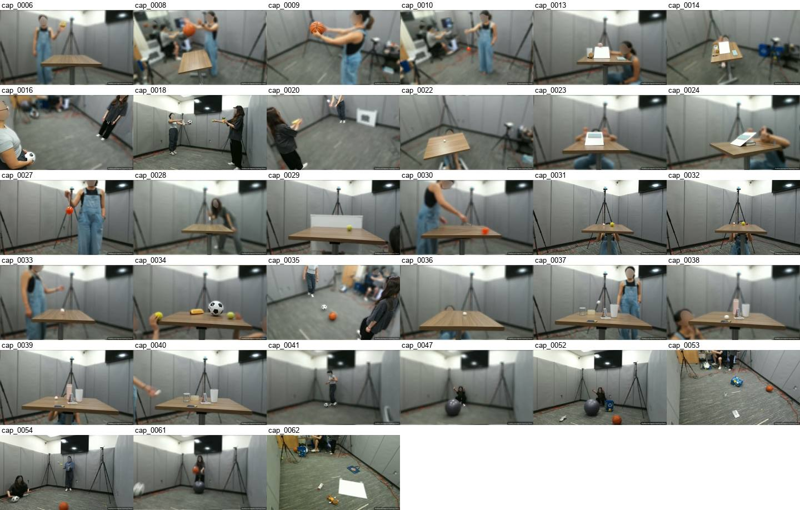
E02 海边白色沙丘 + 红船（15）
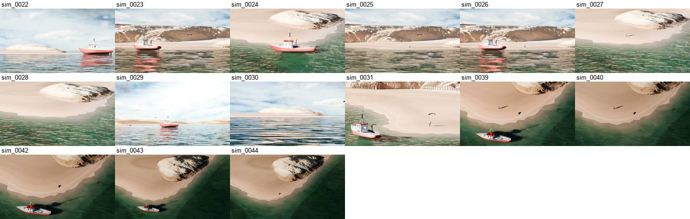
E03 海面 + 金色沙丘（4）
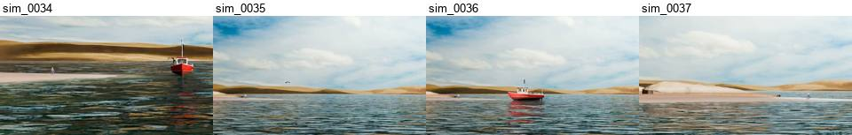
E04 白色十字路口（10）
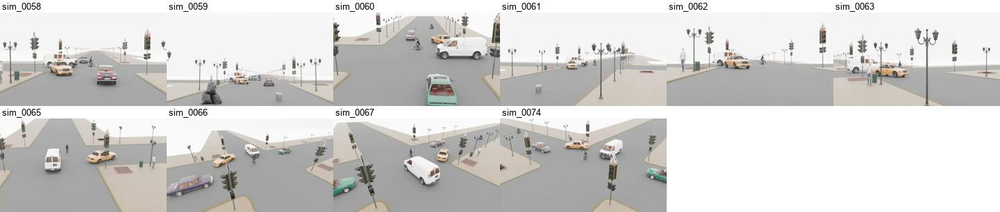
E05 涂鸦白墙街道（5）
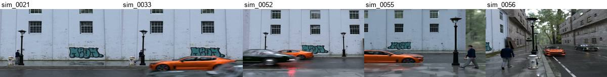
E06 Photo Lab 小镇街道（5）
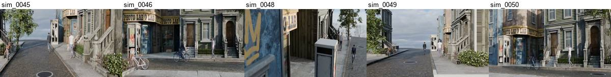
E07 美术馆中庭（4）
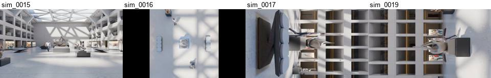
E08 草地谷仓（4）
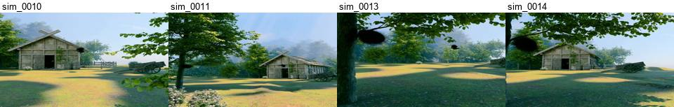
E09 地下停车场（4）
E10 书房书桌（4）
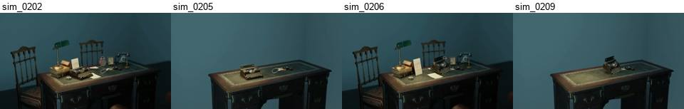
E11 仓库传送带（3）
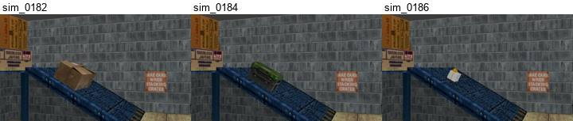
E12 湖边木屋（码头）（2）
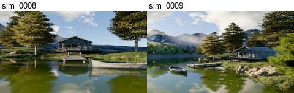
E13 隧道走廊（2）
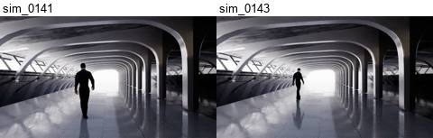
E14 黑猫房间 1（2）
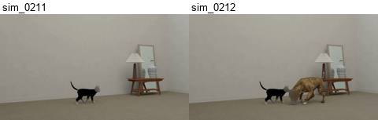
E15 月球（2）
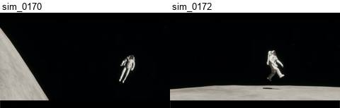
E16 单独环境（各 1 组）（16）
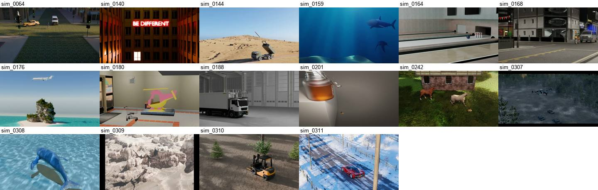
E00 无环境（纯色或背景已去除）（17）
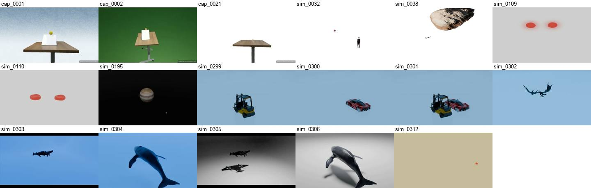
3D 题目问前景还是背景
前景是视频里会动的物体（球、人、车、猫），尺寸和速度可以从它的运动加 prior 算出。背景是静止物体（桌子、路灯、车道、花瓶），视频里没有运动可用，只能靠场景的 3D 几何来量。这里的“背景”指静止物体，与“去背景”无关：去背景版里仍可见的桌子、斜坡也算背景。
| 类别 | 题数 | 问前景 | 问背景 | 背景占比 |
|---|---|---|---|---|
| D3 | 969 | 725 | 244 | 25% |
| S3 | 578 | 406 | 172 | 30% |
| 合计 | 1,547 | 1,131 | 416 | 27% |
- 背景题全是尺寸题：高 138、宽 112、长 89、直径 36、两物体间距 30；没有一道问背景的速度。
- 分布不均：132 个编号组中 75 个至少有一道背景题。按环境看，美术馆中庭（E07）35/40、草地谷仓（E08）18/25、湖边木屋（E12）15/25 以背景为主；实验室（E01）212/766；仓库传送带（E11）0/15、月球（E15）0/32 完全不问背景。
- 对建模的意义：背景不需要逼真重建，只需地面、相机和被问到的那几个静止物体的几何；前景用分割掩码单独拟合，云、光照等外观差异不影响。
| 例子 | prior | 问前景 | 问背景 |
|---|---|---|---|
simulation_0211 黑猫 | 猫速 0.94 m/s | 猫的长、高，猫到相机的距离 | 长凳、台灯、灯罩、花瓶、落地镜（8 题） |
simulation_0062 路口 | 白车加速度 4 m/s² | 白车、黄车、行人、自行车的尺寸和速度 | 车道宽、红绿灯高、路灯高（3 题） |
captured_0023 书滑下斜坡 | 书在 1.4 s 的加速度 | 书的速度、尺寸、位移 | 斜坡长宽、桌子宽（3 题） |
simulation_0015 美术馆 | 人高 1.87 m | 人的速度（1 题） | 雕塑、底座、展板、长椅、屋顶框架（9 题） |
分类方法：问速度、加速度、位移的算前景；问尺寸的，看该物体在 depth_info 中距离是否随时间变化、是否出现在动态 prior 或速度题里。被判为背景的物体已逐个人工复核，把会动的（钟摆绳、实验室里的人、路口其他车辆、血细胞、木星模型等）改回前景。静止的道具（未被击倒的保龄球瓶、停着的火箭发射车）算背景。误差估计在几十道题以内。
编号组与变体（要点）
编号组 = 去掉后缀的编号（如 captured_0023），即同一次拍摄或渲染的所有版本。408 个编号组里 117 个有变体：s 简化背景、x / _segmented 分割掩码、a / b 两个机位。对实现有影响的只有以下几点，明细见附录。
- 只换背景的变体共用同一相机和同一段运动，重建一次即可复用；分割版本身就是前景掩码，可以直接借给同组的原始版和简化版。
- 变体之间题目不完全相同：117 组里只有 59 组完全一致，另有 14 组的 prior 写法不同，要按题目文本对齐。
- 编号不同也可能是同一事件（同一物体、同一运动，只换机位或光照），合并后 373（严格）到约 266（宽松）组，且常跨 2D / 3D 类别，可互相校验尺寸和轨迹。
- 后缀解析忽略大小写（
captured_0010的分割版后缀是大写X）；simulation_0032、0038、0115只有分割版。
按测量对象和环境分类（全部 408 个编号组）
按测量对象分：四类各有哪几种场景（按 prior 中的物体归为 9 种，每个编号组只计一次）：
| 场景类型 | D2 | D3 | S2 | S3 | 合计 | 包括 | 示例 |
|---|---|---|---|---|---|---|---|
| 车辆 / 道路 | 34 | 21 | 19 | 8 | 82 | 汽车、路口车流、自行车、滑板车、叉车 | internet_0001 车道与汽车、simulation_0058 路口、internet_0054 滑板车 |
| 动物 | 54 | 13 | 6 | 5 | 78 | 猫、马、羚羊、浣熊、鸟、鲨鱼、鲸、鱼、蝴蝶、大象 | simulation_0227 黑猫、simulation_0274 浣熊、simulation_0030 老鹰 |
| 日常物品 / 实验器材 | 33 | 14 | 26 | 4 | 77 | 书、杯子、箱子、桌面物品、信用卡、纸巾卷、传送带 | captured_0023 书本、simulation_0202 打字机与放大镜、captured_0039 信用卡 |
| 球类 / 体育 | 17 | 15 | 21 | 14 | 67 | 乒乓球、网球、篮球、台球、保龄球、球场 | captured_0034 网球、internet_0027 台球、simulation_0163 保龄球 |
| 太空 / 飞行器 | 18 | 5 | 6 | 3 | 32 | 飞船、火箭、飞机、宇航员、天体模型、无人机、热气球 | simulation_0176 飞机、simulation_0263 飞船、simulation_0171 宇航员 |
| 人物 | 9 | 9 | 1 | 9 | 28 | 行人、步行的人 | simulation_0015 中庭行人、simulation_0142 步行的人 |
| 船只 / 水上 | 3 | 3 | 11 | 4 | 21 | 船、独木舟、帆船、游泳者、泳圈 | internet_0025 独木舟、simulation_0009 码头的船、internet_0023 游泳者 |
| 奇幻 / 机器人 | 10 | 2 | 1 | 0 | 13 | 凤凰、龙、机器人 | simulation_0269 凤凰、simulation_0309 龙、simulation_0218 机器人 |
| 微观 / 流体 | 7 | 3 | 0 | 0 | 10 | 红细胞、病毒、水滴、气泡 | simulation_0110 红细胞、simulation_0107 病毒、simulation_0201 水滴 |
| 合计 | 185 | 85 | 91 | 47 | 408 |
归类规则：按 prior 中的已知物体归类（如 prior 是 “height of the person” 就归人物，即使场景在码头）；prior 是重力加速度、不含物体时，按题目里的物体归类。按关键词自动归类，边界情况（如骑滑板车的人归车辆）以规则为准。D2 以动物为主（54 / 185），S2 以日常物品和球类为主，S3 以球类、人物和车辆为主（31 / 47）；奇幻和微观场景只出现在 Dynamic 类别（及 1 个 S2）中。
按环境分：每个编号组截一帧（优先原视频的中间时刻），按画面背景人工归为 9 种环境：
| 环境 | D2 | D3 | S2 | S3 | 合计 | 示例 |
|---|---|---|---|---|---|---|
| 纯色 / 摄影棚背景 | 45 | 13 | 17 | 1 | 76 | simulation_0076 灰底行人、simulation_0269 凤凰、simulation_0198 水滴 |
| 室内房间 | 29 | 10 | 12 | 7 | 58 | simulation_0214 客厅、simulation_0187 仓库、simulation_0231 教室、simulation_0149 地下车库 |
| 城市道路 / 街景 | 21 | 18 | 10 | 6 | 55 | simulation_0058 路口、simulation_0045 小镇街道、internet_0001 高速俯拍 |
| 水面 / 水下 / 码头 | 18 | 13 | 13 | 11 | 55 | simulation_0023 海滩与船、simulation_0154 水下鲨鱼、internet_0025 湖面独木舟、internet_0039 泳池 |
| 桌面 / 近景 | 24 | 4 | 16 | 0 | 44 | internet_0043 桌面物品、internet_0034 纸巾卷、simulation_0203 书桌打字机 |
| 户外自然 | 30 | 6 | 4 | 3 | 43 | simulation_0236 草地房屋、simulation_0243 森林雪山、simulation_0310 林地叉车 |
| 实验室房间（实拍） | 1 | 20 | 0 | 16 | 37 | captured_0054、captured_0021、captured_0013：同一间灰墙实验室 |
| 体育场地 | 8 | 0 | 15 | 1 | 24 | internet_0009 网球场俯拍、simulation_0160 台球桌、simulation_0162 保龄球道、internet_0057 室内篮球馆 |
| 太空 / 天空 | 9 | 1 | 4 | 2 | 16 | simulation_0193 木星卫星模型、simulation_0170 月面宇航员、simulation_0088 天空飞鸟 |
| 合计 | 185 | 85 | 91 | 47 | 408 |
- 全部 37 个实拍编号组（
captured_）在同一间实验室：灰色隔板墙、三脚架、同一张桌子，相机也是同一台。S3 的 16 个和 D3 的 20 个实拍编号组共享同一个房间。 - 76 个编号组是纯色或摄影棚背景（全部是仿真，D2 占 45 个）：几乎没有背景几何，物体悬在纯色空间中，尺度只能靠 prior 物体本身。
- 3D 类别集中在少数环境：D3 的 85 个编号组里，实验室 20、城市道路 18、水面 13、纯色 13，合计 64 个；S3 的 47 个编号组里，实验室 16、水面 11，合计 27 个。
- internet 视频分布最散：74 个编号组分布在 7 种环境，其中桌面 / 近景最多（28 个）。
归类按截帧画面人工判断，每个编号组只看一帧，边界情况：俯拍的高速 / 乡间公路归城市道路；泳池、湖、海、水下都归水面；室内但只拍到桌面或墙面局部的归桌面 / 近景；户外球场归体育场地。
编号组与变体明细
编号组是去掉后缀的编号（如 captured_0023），即同一次拍摄或渲染的所有视频版本）。变体是同一编号组的不同视频版本：内容和运动相同，只是背景处理或机位不同。408 个编号组里有 117 个有变体，变体模式共 7 种：
| 变体模式 | 编号组数 | 视频数 | D2 / D3 / S2 / S3 | 示例 | 说明 |
|---|---|---|---|---|---|
| 只有原视频 | 288 | 288 | 149 / 53 / 70 / 16 | simulation_0176 | 没有变体 |
原视频 + _segmented | 82 | 164 | 34 / 12 / 21 / 15 | simulation_0227、internet_0001 | 用 SAM 抠出运动前景，背景换成纯色（video_source = segmentation） |
原视频 + s + x | 30 | 90 | 1 / 15 / 0 / 14 | captured_0023、captured_0021 | 实拍专用：s 简化背景，x 分割掩码 |
a / as / ax / b / bs / bx | 3 | 18 | 0 / 1 / 0 / 2 | captured_0034、0035、0054 | 同一次实验的两个机位 × 三种背景（见下方“变体示例”） |
只有 _segmented | 3 | 3 | 1 / 2 / 0 / 0 | simulation_0032、0038、0115 | 原视频不在测试集里 |
原视频 + s | 1 | 2 | 0 / 1 / 0 / 0 | captured_0006 | 缺少 x 版 |
原视频 + s + X | 1 | 3 | 0 / 1 / 0 / 0 | captured_0010 | 分割版后缀是大写 X，按后缀解析时要忽略大小写 |
每个编号组的所有变体都在同一个类别里。变体之间的题目大多相同，但不总是完全一样：117 个编号组里只有 59 个的题目完全相同。常见差异是分割版删掉了针对已被抠掉的背景物体的题（如 captured_0027 原视频多一道 shoulder breadth 题，s / x 版没有）。另有 14 个编号组的 prior 在变体之间写法不同，个别数值也不同（如 internet_0005 的 walking velocity 原视频为 1.25 m/s，分割版为 1.4 m/s）。做一致性检查时应按题目文本对齐，不要假设整组题相同。
变体示例：captured_0054
编号 captured_0054 是同一次实验（滚动的橙色球和足球）的 6 个视频：两个机位（a / b），每个机位各有原始、简化背景（s）、分割掩码（x）三种背景。6 个视频共用同一个 prior（velocity of the orange ball at 0.5s = 2.21 m/s）和同一份 depth_info，video_type 第 4 位依次为 C / S / X。点击文件名可在 HuggingFace 打开。

| video_id | video_type | 题数 | 内容 |
|---|---|---|---|
captured_0054a | V3MC | 12 | 原始实拍，机位 A：广角，从侧面看两人传球 |
captured_0054as | V3MS | 12 | a 版抠出人和球，背景换成简化背景（去掉实验室） |
captured_0054ax | V3MX | 11 | a 版分割掩码：人和球保留，背景为纯绿色 |
captured_0054b | V3MC | 12 | 同一次实验，机位 B：从坐地者身后看球滚远；球保留原色，其余画面经 SAM 2 Demo 特效处理（偏绿、反色） |
captured_0054bs | V3MS | 12 | b 版抠出两个球，背景换成简化背景 |
captured_0054bx | V3MX | 12 | b 版分割掩码：只保留两个球，背景为纯黑 |
HuggingFace 上的文件列表与数据表（每个 video_id 对应多行题目）：


不同编号，同一事件
后缀之外，还有不少编号不同的 simulation 视频是同一个事件：同一物体、同一运动，prior 数值相同；变的是机位、缩放、光照、家居摆设或干扰物体。
- 数量：prior 和整组题目都相同的有 27 组（35 个编号），408 合并后为 373；只看 prior 相同（不计重力）约为 266，后者只抽查过下面几组。
- 会跨类别：正面或平视机位标为 2D，斜视、俯侧或拉近的机位标为 3D，所以同一事件常同时在 D2 和 D3（或 S2 和 S3）。
- 题目不完全相同：新出现的物体会带来新题（如第二只猫、警车），黑猫组每个视频 10 到 16 题。
例 1：黑猫，simulation_0210 到 0217（8 个编号，prior = speed of the black cat 0.94 m/s）。分两套房间布置，每套里组合机位、第二只猫和阳光效果。
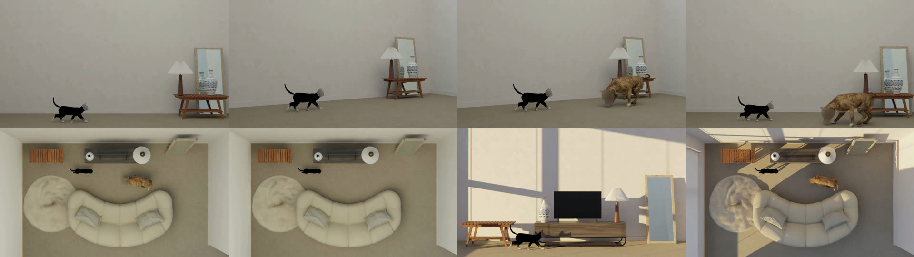
| video_id | video_type | 类别 | 题数 | 房间 | 内容 |
|---|---|---|---|---|---|
simulation_0210 | V2MS | D2 | 10 | 房间 1 | 正机位，一只黑猫 |
simulation_0211 | V3MS | D3 | 12 | 侧面机位，一只黑猫，轨迹与 0210 相同 | |
simulation_0212 | V3MC | D3 | 16 | 机位同 0211，多一只花猫；黑猫轨迹与 0211 完全相同 | |
simulation_0213 | V2MC | D2 | 14 | 机位同 0210，多一只与 0212 相同的花猫；黑猫轨迹与 0210 相同 | |
simulation_0214 | V2MC | D2 | 13 | 房间 2（背景和家居摆设与房间 1 完全不同） | 俯视，两只猫，与 0213 相同 |
simulation_0215 | V2MC | D2 | 11 | 俯视，一只黑猫，轨迹与 0210 / 0211 相同 | |
simulation_0216 | V2MC | D2 | 14 | 平视，同一只黑猫，加了阳光效果 | |
simulation_0217 | V2MC | D2 | 14 | 猫、轨迹、家居摆设都与 0214 相同，加了阳光效果 |
其他例子。
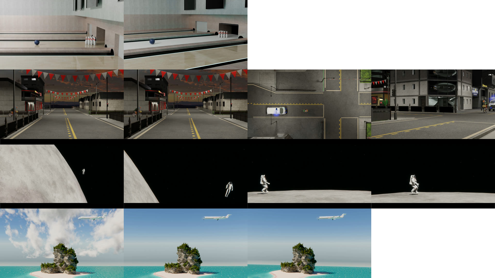
| 事件（prior） | 视频与类别 | 区别 |
|---|---|---|
| 保龄球 diameter of the ball = 0.21 m | 0163 S20164 S3 | 0163 正前方；0164 侧上方 |
| 人骑车过十字路口 speed of the bike = 5.52 m/s | 0165 D20166 D20167 D20168 D3 | 天色昏暗的十字路口。0166 比 0165 多一辆跟在骑手身后的警车，其余完全一样；0167 俯视，背景环境和人能看出不同，但风格与 0165 / 0166 / 0168 相同；0168 倾斜视角并拉近，环境背景略有不同 |
| 月球上的宇航员 height of the astronaut = 2.2 m | 0169 S20170 S30171 S20172 S3 | 0169 远景，月球大、人小；0170 拉近，人大、只见月球一部分；0171 和 0172 站在月面上，0171 平视、0172 斜视 |
| 飞机飞过小岛 speed of the airplane = 153.582 m/s | 0173 D20175 D20176 D3 | 三者背景和飞机相同。0173 与 0175 角度也相同，只是 0173 多了云；0176 与 0175 相同，但角度斜 |
严格匹配的其他重复组（prior 与题目完全相同）还有：0076/0077、0082/0083、0085/0086、0096/0097、0099/0100、0102/0103、0128/0129、0151/0152、0154/0155、0179/0180、0221/0222、0251/0252、0255/0256、0264/0267、0265/0266/0268、0269/0271/0272、0275/0277、0285/0287、0286/0303/0305/0307、0288/0290、0292/0293、0294/0295（同一只蝴蝶，一个灰色空背景，一个蘑菇森林）、0302/0309、0304/0306/0308（均为 simulation）。
每类有哪些编号组
每类给出 4 个示例，展开可看该类全部编号组（编号组、所含视频、题数、prior）。
D2（Dynamic 2D，185 个编号组）
prior 是速度或加速度，平面运动。示例：
| 编号组 | 视频（变体） | 题数 | prior | 示例问题 |
|---|---|---|---|---|
captured_0015 | captured_0015captured_0015scaptured_0015x | 15 | Gravity acc = 9.8m/s^2 | What is the height of the person in cm? |
simulation_0227 | simulation_0227simulation_0227_segmented | 19 | speed of the black cat = 1.041m/s | What is the length of the black cat (including its tail) in meters? |
internet_0055 | internet_0055 | 8 | average speed of the person riding scooter = 1.95 m/s | What is the height of the walking person in meters? |
simulation_0158 | simulation_0158 | 8 | acceleration of the turtle = 2.639 m/s^2 | What is the length of the turtle in meters? |
D2（Dynamic 2D）全部 185 个编号组
| 编号组 | 视频 | 题数 | prior |
|---|---|---|---|
captured_0015 | captured_0015captured_0015scaptured_0015x | 15 | Gravity acc = 9.8m/s^2 |
internet_0005 | internet_0005internet_0005_segmented | 8 | walking velocity = 1.25m/s |
internet_0013 | internet_0013 | 6 | pedestrian walking speed = 1.1 m/s |
internet_0019 | internet_0019internet_0019_segmented | 14 | gravity acc = 9.8m/s^2 |
internet_0028 | internet_0028 | 2 | velocity of the conveyer belt = 0.5 m/s |
internet_0029 | internet_0029 | 6 | gravity acceleration = 9.8 m/s^2 |
internet_0043 | internet_0043 | 8 | velocity of the white ball at 1.0s = 33.38 cm/s |
internet_0044 | internet_0044 | 10 | gravity acceleration = 9.8 m/s^2 |
internet_0045 | internet_0045 | 6 | velocity of the rolling cylinder = 107.3 cm/s |
internet_0047 | internet_0047 | 6 | velocity of the rolling ball at 0.5s = 2.94m/s |
internet_0048 | internet_0048 | 8 | gravity acceleration = 9.8 m/s^2 |
internet_0049 | internet_0049 | 7 | average speed of the person riding scooter = 3.8 m/s |
internet_0050 | internet_0050 | 7 | average speed of the person riding scooter = 2.9 m/s |
internet_0051 | internet_0051 | 5 | average speed of the person riding scooter = 2.07 m/s |
internet_0052 | internet_0052 | 6 | average speed of the person riding scooter = 2.91 m/s |
internet_0053 | internet_0053 | 10 | average speed of the person riding scooter = 4.46 m/s |
internet_0054 | internet_0054 | 6 | average speed of the person riding scooter = 4.9 m/s |
internet_0055 | internet_0055 | 8 | average speed of the person riding scooter = 1.95 m/s |
internet_0056 | internet_0056 | 3 | average speed of the person riding scooter = 2.64 m/s |
internet_0057 | internet_0057 | 9 | gravity acceleration = 9.8 m/s^2 |
internet_0058 | internet_0058 | 9 | gravity acceleration = 9.8 m/s^2 |
internet_0059 | internet_0059 | 9 | gravity acceleration = 9.8 m/s^2 |
internet_0060 | internet_0060 | 6 | gravity acceleration = 9.8 m/s^2 |
internet_0061 | internet_0061 | 6 | gravity acceleration = 9.8 m/s^2 |
internet_0062 | internet_0062 | 6 | gravity acceleration = 9.8 m/s^2 |
internet_0063 | internet_0063 | 6 | gravity acceleration = 9.8 m/s^2 |
internet_0064 | internet_0064 | 8 | gravity acceleration = 9.8 m/s^2 |
internet_0065 | internet_0065 | 8 | gravity acceleration = 9.8 m/s^2 |
internet_0066 | internet_0066 | 10 | gravity acceleration = 9.8 m/s^2 |
internet_0067 | internet_0067 | 4 | height of the acorn = 8 cm |
internet_0068 | internet_0068 | 8 | acceleration of the acorn from 2.00s to 2.30s = 0.77m/s^2 |
internet_0069 | internet_0069 | 8 | acceleration of the cup from 2.00s to 2.30s = 0.32m/s^2 |
internet_0070 | internet_0070 | 5 | velocity of the speedboat at 1.00s = 11 m/s |
simulation_0012 | simulation_0012simulation_0012_segmented | 6 | speed of the bird =6m/s |
simulation_0020 | simulation_0020 | 3 | gravity acc = 9.8m/s^2 |
simulation_0047 | simulation_0047 | 4 | speed of the walking person = 1.236m/s |
simulation_0053 | simulation_0053 | 5 | acceleration of the orange car = -2.86m/s^2 |
simulation_0054 | simulation_0054 | 6 | acceleration of the orange car = -2.86m/s^2 |
simulation_0057 | simulation_0057simulation_0057_segmented | 6 | acceleration of the orange car = -2.86m/s^2 |
simulation_0068 | simulation_0068simulation_0068_segmented | 10 | acceleration of the white car = 4m/s^2 |
simulation_0069 | simulation_0069 | 3 | acceleration of the white car = 4m/s^2 |
simulation_0072 | simulation_0072 | 1 | speed of the bicycle = 5.33m/s |
simulation_0073 | simulation_0073 | 7 | speed of the bicycle = 5.33m/s |
simulation_0076 | simulation_0076 | 3 | speed of the person in the black shirt = 1m/s |
simulation_0077 | simulation_0077 | 3 | speed of the person in the black shirt = 1m/s |
simulation_0078 | simulation_0078 | 3 | speed of the person in the white shirt = 1.3m/s |
simulation_0084 | simulation_0084 | 7 | speed of the yellow car = 5.07m/s |
simulation_0085 | simulation_0085 | 7 | acceleration of the car = 4.03m/s^2 |
simulation_0086 | simulation_0086 | 7 | acceleration of the car = 4.03m/s^2 |
simulation_0087 | simulation_0087 | 7 | speed of the bike = 5.07m/s |
simulation_0088 | simulation_0088 | 6 | speed of the big bird = 17.98m/s |
simulation_0090 | simulation_0090 | 4 | speed of the small bird = 11m/s |
simulation_0091 | simulation_0091 | 4 | speed of the small bird = 11m/s |
simulation_0094 | simulation_0094 | 4 | speed of the car = 30m/s |
simulation_0095 | simulation_0095 | 5 | acceleration of the car = 10m/s^2 |
simulation_0096 | simulation_0096 | 5 | acceleration of the car = 10m/s^2 |
simulation_0097 | simulation_0097 | 5 | acceleration of the car = 10m/s^2 |
simulation_0098 | simulation_0098simulation_0098_segmented | 8 | speed of the shark = 3m/s |
simulation_0101 | simulation_0101simulation_0101_segmented | 10 | acceleration of the shark = 1m/s^2 |
simulation_0102 | simulation_0102simulation_0102_segmented | 12 | acceleration of the shark = 1m/s^2 |
simulation_0103 | simulation_0103simulation_0103_segmented | 12 | acceleration of the shark = 1m/s^2 |
simulation_0104 | simulation_0104 | 3 | the lifting speed of the charging post = 0.2m/s |
simulation_0105 | simulation_0105 | 4 | gravity acc = 9.8m/s^2 |
simulation_0106 | simulation_0106 | 3 | speed of the right virus = 1.5667m/s |
simulation_0107 | simulation_0107 | 3 | speed of the right virus = 1.7393m/s |
simulation_0108 | simulation_0108 | 3 | speed of the left virus = 1.7393m/s |
simulation_0111 | simulation_0111 | 3 | speed of the boat = 2m/s |
simulation_0112 | simulation_0112simulation_0112_segmented | 7 | speed of the car = 6.66m/s |
simulation_0114 | simulation_0114simulation_0114_segmented | 6 | acceleration of the plane = 18m/s^2 |
simulation_0115 | simulation_0115_segmented | 5 | acceleration of the boat = 3m/s^2 |
simulation_0116 | simulation_0116simulation_0116_segmented | 10 | gravity acc = 9.8m/s^2 |
simulation_0117 | simulation_0117 | 5 | gravity acc = 9.8m/s^2 |
simulation_0118 | simulation_0118 | 6 | speed of the toy car = 0.05m/s |
simulation_0119 | simulation_0119 | 5 | speed of the chess = 0.04m/s |
simulation_0120 | simulation_0120 | 5 | speed of the robot cleaner = 1m/s |
simulation_0122 | simulation_0122 | 1 | gravity acc = 9.8m/s^2 |
simulation_0123 | simulation_0123simulation_0123_segmented | 12 | speed of the cup = 0.338m/s |
simulation_0124 | simulation_0124simulation_0124_segmented | 14 | speed of the black car = 26.085m/s |
simulation_0125 | simulation_0125 | 4 | speed of the person = 1.22 m/s |
simulation_0127 | simulation_0127 | 8 | speed of the bike = 24m/s |
simulation_0128 | simulation_0128simulation_0128_segmented | 4 | gravity acceleration = 9.8m/s^2 |
simulation_0129 | simulation_0129simulation_0129_segmented | 6 | gravity acceleration = 9.8m/s^2 |
simulation_0130 | simulation_0130 | 7 | speed of the car = 11.155m/s |
simulation_0131 | simulation_0131 | 2 | speed of the hot air balloon = 4m/s |
simulation_0132 | simulation_0132 | 4 | gravity acceleration = 9.8m/s^2 |
simulation_0133 | simulation_0133 | 5 | gravity acceleration = 9.8m/s^2 |
simulation_0137 | simulation_0137 | 4 | speed of the bird = 9.146m/s |
simulation_0142 | simulation_0142 | 4 | walking speed = 1.693m/s |
simulation_0154 | simulation_0154 | 2 | speed of the shark = 7 m/s |
simulation_0155 | simulation_0155 | 2 | speed of the shark = 7 m/s |
simulation_0156 | simulation_0156 | 4 | speed of the shark = 7 m/s |
simulation_0157 | simulation_0157 | 3 | acceleration of the turtle = 2.639 m/s^2 |
simulation_0158 | simulation_0158 | 8 | acceleration of the turtle = 2.639 m/s^2 |
simulation_0165 | simulation_0165 | 3 | speed of the bike = 5.52m/s |
simulation_0166 | simulation_0166 | 6 | speed of the bike = 5.52m/s |
simulation_0167 | simulation_0167 | 6 | speed of the bike = 5.52m/s |
simulation_0173 | simulation_0173 | 3 | speed of the airplane = 153.582m/s |
simulation_0175 | simulation_0175 | 3 | speed of the airplane = 153.582m/s |
simulation_0177 | simulation_0177simulation_0177_segmented | 4 | speed of the elephant = 1.424m/s |
simulation_0178 | simulation_0178simulation_0178_segmented | 10 | speed of the big elephant = 2.313m/s |
simulation_0179 | simulation_0179 | 6 | acceleration of the trolley = 1.507m/s |
simulation_0181 | simulation_0181 | 5 | acceleration of the box after 0.75s = 2.338m/s^2 |
simulation_0183 | simulation_0183 | 5 | acceleration of the tool box after 1.25s = 1.58m/s^2 |
simulation_0185 | simulation_0185 | 5 | acceleration of the gift box after 1s = 3.18m/s^2 |
simulation_0187 | simulation_0187 | 5 | acceleration of the truck = 10.757m/s^2 |
simulation_0189 | simulation_0189simulation_0189_segmented | 10 | speed of the box = 0.094m/s |
simulation_0190 | simulation_0190simulation_0190_segmented | 10 | width of the box = 1.33m |
simulation_0191 | simulation_0191simulation_0191_segmented | 14 | acceleration of the box before 0.6s = 9.8m/s |
simulation_0192 | simulation_0192simulation_0192_segmented | 10 | acceleration of the box before 0.6s = 9.8m/s |
simulation_0193 | simulation_0193 | 12 | Callisto's model speed(the outermost planet) = 0.627 m/s |
simulation_0194 | simulation_0194 | 3 | Callisto's model speed(the outermost planet) = 0.627 m/s |
simulation_0196 | simulation_0196 | 4 | speed of the bubble in the drop = 0.00144m/s |
simulation_0198 | simulation_0198 | 9 | acceleration of the droplet = 9.7m/s^2 |
simulation_0199 | simulation_0199 | 9 | acceleration of the droplet = 9.7m/s^2 |
simulation_0200 | simulation_0200 | 8 | acceleration of the droplet = 9.7m/s^2 |
simulation_0203 | simulation_0203 | 8 | acceleration of the magnifying glass before 0.5s = 9.8m/s^2 |
simulation_0204 | simulation_0204 | 7 | acceleration of the magnifying glass before 0.5s = 9.8m/s^2 |
simulation_0207 | simulation_0207 | 8 | acceleration of the typewriter before 0.45s = 9.8m/s^2 |
simulation_0208 | simulation_0208 | 7 | acceleration of the typewriter before 0.45s = 9.8m/s^2 |
simulation_0210 | simulation_0210 | 10 | speed of the black cat = 0.94m/s |
simulation_0213 | simulation_0213 | 14 | speed of the black cat = 0.94m/s |
simulation_0214 | simulation_0214 | 13 | speed of the black cat = 0.94m/s |
simulation_0215 | simulation_0215 | 11 | speed of the black cat = 0.94m/s |
simulation_0216 | simulation_0216simulation_0216_segmented | 28 | speed of the black cat = 0.94m/s |
simulation_0217 | simulation_0217 | 14 | speed of the black cat = 0.94m/s |
simulation_0218 | simulation_0218simulation_0218_segmented | 8 | speed of the big robot = 5.924m/s |
simulation_0219 | simulation_0219 | 6 | speed of the big robot = 5.924m/s |
simulation_0220 | simulation_0220 | 2 | speed of the small robot = 0.82m/s |
simulation_0225 | simulation_0225simulation_0225_segmented | 8 | speed of the black cat = 1.041m/s |
simulation_0226 | simulation_0226 | 3 | speed of the black cat = 1.041m/s |
simulation_0227 | simulation_0227simulation_0227_segmented | 19 | speed of the black cat = 1.041m/s |
simulation_0228 | simulation_0228 | 5 | speed of the black cat = 1.041m/s |
simulation_0231 | simulation_0231 | 12 | speed of the black cat = 0.714m/s |
simulation_0232 | simulation_0232 | 10 | speed of the black cat = 0.714m/s |
simulation_0233 | simulation_0233simulation_0233_segmented | 6 | speed of the black cat = 0.714m/s |
simulation_0236 | simulation_0236 | 6 | speed of the horse at the back = 0.874m/s |
simulation_0237 | simulation_0237simulation_0237_segmented | 6 | speed of the horse at the back = 0.874m/s |
simulation_0238 | simulation_0238 | 9 | speed of the horse at the back = 0.874m/s |
simulation_0239 | simulation_0239simulation_0239_segmented | 10 | speed of the horse at the back = 0.874m/s |
simulation_0240 | simulation_0240 | 11 | speed of the horse at the back = 0.874m/s |
simulation_0241 | simulation_0241 | 7 | speed of the horse at the back = 0.874m/s |
simulation_0243 | simulation_0243simulation_0243_segmented | 6 | speed of the antelope = 1.277m/s |
simulation_0244 | simulation_0244 | 6 | speed of the antelope = 1.277m/s |
simulation_0245 | simulation_0245simulation_0245_segmented | 10 | speed of the antelope = 1.277m/s |
simulation_0246 | simulation_0246 | 3 | speed of the antelope = 1.277m/s |
simulation_0247 | simulation_0247simulation_0247_segmented | 6 | speed of the deer = 1.277m/s |
simulation_0248 | simulation_0248simulation_0248_segmented | 16 | speed of the horse at the back = 0.874m/s |
simulation_0249 | simulation_0249 | 5 | speed of the horse at the back = 0.874m/s |
simulation_0257 | simulation_0257 | 7 | acceleration of the plant before 0.5s = 9.8m/s^2 |
simulation_0258 | simulation_0258 | 7 | acceleration of the pen before 0.5s = 9.8m/s^2 |
simulation_0259 | simulation_0259 | 10 | acceleration of the red cup before 0.5s = 9.8m/s^2 |
simulation_0260 | simulation_0260 | 10 | acceleration of the mug cup before 0.5s = 9.8m/s^2 |
simulation_0261 | simulation_0261simulation_0261_segmented | 8 | acceleration of the mug cup before 1s = 9.8m/s^2 |
simulation_0262 | simulation_0262 | 4 | acceleration of the red cup before 0.75s = 9.8m/s^2 |
simulation_0263 | simulation_0263 | 5 | acceleration of the spacecraft = 4m/s^2 |
simulation_0264 | simulation_0264 | 4 | acceleration of the spacecraft at 1.0s = 4m/s^2 |
simulation_0265 | simulation_0265 | 4 | acceleration of the spacecraft at 1.0s = 4m/s^2 |
simulation_0266 | simulation_0266 | 4 | acceleration of the spacecraft at 1.0s = 4m/s^2 |
simulation_0267 | simulation_0267 | 4 | acceleration of the spacecraft at 1.0s = 4m/s^2 |
simulation_0268 | simulation_0268 | 4 | acceleration of the spacecraft at 1.0s = 4m/s^2 |
simulation_0269 | simulation_0269 | 4 | acceleration of the phoenix at 2.0s = 2m/s^2 |
simulation_0270 | simulation_0270 | 4 | acceleration of the phoenix at 2.0s = 2m/s^2 |
simulation_0271 | simulation_0271 | 4 | acceleration of the phoenix at 2.0s = 2m/s^2 |
simulation_0272 | simulation_0272 | 4 | acceleration of the phoenix at 2.0s = 2m/s^2 |
simulation_0273 | simulation_0273 | 3 | acceleration of the phoenix at 2.0s = 2m/s^2 |
simulation_0278 | simulation_0278 | 3 | speed of the whale = 1.67m/s |
simulation_0279 | simulation_0279 | 3 | speed of the whale = 1.67m/s |
simulation_0280 | simulation_0280 | 3 | length of the whale = 19.17m |
simulation_0281 | simulation_0281 | 3 | length of the whale = 19.17m |
simulation_0282 | simulation_0282 | 3 | speed of the dragon = 1.29m/s |
simulation_0284 | simulation_0284 | 3 | speed of the plane = 22.16 m/s |
simulation_0285 | simulation_0285 | 3 | speed of the plane = 22.16 m/s |
simulation_0286 | simulation_0286 | 3 | speed of the plane = 22.16 m/s |
simulation_0287 | simulation_0287 | 3 | speed of the plane = 22.16 m/s |
simulation_0288 | simulation_0288 | 3 | speed of the fish = 0.67m/s |
simulation_0289 | simulation_0289 | 2 | speed of the fish = 0.67m/s |
simulation_0290 | simulation_0290 | 3 | speed of the fish = 0.67m/s |
simulation_0291 | simulation_0291 | 3 | speed of the fish = 0.67m/s |
simulation_0292 | simulation_0292 | 3 | speed of the column below the drone = 0.96m/s |
simulation_0293 | simulation_0293 | 3 | speed of the column below the drone = 0.96m/s |
simulation_0294 | simulation_0294 | 2 | speed of the butterfly = 0.32m/s |
simulation_0295 | simulation_0295 | 2 | speed of the butterfly = 0.32m/s |
simulation_0296 | simulation_0296 | 3 | speed of the butterfly = 0.32m/s |
simulation_0297 | simulation_0297 | 1 | speed of the jellyfish = 1.75m/s |
simulation_0298 | simulation_0298 | 3 | speed of the fire truck = 11.18m/s |
D3（Dynamic 3D，85 个编号组）
prior 是速度或加速度，有深度。示例：
| 编号组 | 视频（变体） | 题数 | prior | 示例问题 |
|---|---|---|---|---|
captured_0054 | captured_0054acaptured_0054ascaptured_0054axcaptured_0054bcaptured_0054bscaptured_0054bx | 71 | velocity of the orange ball at 0.5s = 2.21m/s | What is the orange ball's displacement between 0.5s and 1.0s in meters? |
captured_0023 | captured_0023captured_0023scaptured_0023x | 27 | t=1.4, book acceleration = 2.8m/s^2 | What is the velocity of the book at 1.2s in cm/s? |
simulation_0176 | simulation_0176 | 3 | speed of the airplane = 153.582m/s | What is the length of the airplane in meters? |
simulation_0011 | simulation_0011 | 6 | gravity acc = 9.8m/s^2 | What is the average speed of the bird from 0.5s to 1.0s in m/s? |
D3（Dynamic 3D）全部 85 个编号组
| 编号组 | 视频 | 题数 | prior |
|---|---|---|---|
captured_0001 | captured_0001 | 5 | t=1.6s, ball acceleration = 3.0m/s^2 |
captured_0002 | captured_0002 | 5 | t=1.4, ball acceleration = 4.05m/s^2 |
captured_0006 | captured_0006captured_0006s | 10 | acceleration = 9.8 m/s^2 |
captured_0008 | captured_0008captured_0008scaptured_0008x | 15 | acceleration = 9.8 m/s^2 |
captured_0009 | captured_0009captured_0009scaptured_0009x | 15 | acceleration = 9.8 m/s^2 |
captured_0010 | captured_0010captured_0010Xcaptured_0010s | 18 | gravity_acceleration = 9.8 m/s^2 |
captured_0013 | captured_0013captured_0013scaptured_0013x | 24 | t=1.5, ball acceleration = 3.0m/s^2 |
captured_0014 | captured_0014captured_0014scaptured_0014x | 33 | t=0.6, ball acceleration = 4.6m/s^2 |
captured_0016 | captured_0016captured_0016scaptured_0016x | 12 | Gravity acc = 9.8m/s^2 |
captured_0018 | captured_0018captured_0018scaptured_0018x | 57 | Gravity acc = 9.8m/s^2 |
captured_0020 | captured_0020captured_0020scaptured_0020x | 24 | Gravity acc = 9.8m/s^2 |
captured_0023 | captured_0023captured_0023scaptured_0023x | 27 | t=1.4, book acceleration = 2.8m/s^2 |
captured_0024 | captured_0024captured_0024scaptured_0024x | 30 | t=1.0, book acceleration = 2.8m/s^2 |
captured_0041 | captured_0041captured_0041scaptured_0041x | 9 | velocity of the soccer ball at 1.5s = 5.21m/s |
captured_0047 | captured_0047captured_0047scaptured_0047x | 9 | velocity of the yoga ball at 1.0s = 2.1464m/s |
captured_0052 | captured_0052captured_0052scaptured_0052x | 24 | velocity of the yoga ball at 1.0s = 2.19m/s |
captured_0053 | captured_0053captured_0053scaptured_0053x | 24 | velocity of the trashbin at 0.4s = 0.9962m/s |
captured_0054 | captured_0054acaptured_0054ascaptured_0054axcaptured_0054bcaptured_0054bscaptured_0054bx | 71 | velocity of the orange ball at 0.5s = 2.21m/s |
captured_0061 | captured_0061captured_0061scaptured_0061x | 21 | velocity of the yoga ball at 0.6s = 2.5104m/s |
captured_0062 | captured_0062captured_0062scaptured_0062x | 24 | velocity of the whiteboard at 1.4s = 1.9339m/s |
simulation_0009 | simulation_0009simulation_0009_segmented | 18 | speed of the boat = 1.5 m/s |
simulation_0011 | simulation_0011 | 6 | gravity acc = 9.8m/s^2 |
simulation_0013 | simulation_0013 | 3 | gravity acc = 9.8m/s^2 |
simulation_0014 | simulation_0014 | 6 | gravity acc = 9.8m/s^2 |
simulation_0016 | simulation_0016 | 3 | speed of the person = 1.3m/s |
simulation_0017 | simulation_0017simulation_0017_segmented | 15 | speed of the person = 1.3m/s |
simulation_0023 | simulation_0023simulation_0023_segmented | 10 | speed of the eagle = 11.84m/s |
simulation_0024 | simulation_0024simulation_0024_segmented | 9 | speed of the boat = 4m/s |
simulation_0025 | simulation_0025simulation_0025_segmented | 8 | speed of the person = 1.3m/s |
simulation_0029 | simulation_0029simulation_0029_segmented | 8 | speed of the eagle = 12m/s |
simulation_0030 | simulation_0030simulation_0030_segmented | 2 | speed of the eagle = 12m/s |
simulation_0031 | simulation_0031simulation_0031_segmented | 16 | speed of the person = 1.3m/s |
simulation_0032 | simulation_0032_segmented | 5 | gravity acc = 9.8m/s^2 |
simulation_0033 | simulation_0033 | 8 | acceleration of the orange car = -2.86m/s^2 |
simulation_0037 | simulation_0037simulation_0037_segmented | 4 | speed of the person = 1.3m/s |
simulation_0038 | simulation_0038_segmented | 3 | speed of the person = 1.3m/s |
simulation_0039 | simulation_0039simulation_0039_segmented | 14 | speed of the boat = 4m/s |
simulation_0042 | simulation_0042 | 5 | speed of the eagle = 11.84m/s |
simulation_0045 | simulation_0045 | 8 | speed of the bike = 4.87m/s |
simulation_0049 | simulation_0049 | 5 | speed of the bike = 4.87m/s |
simulation_0050 | simulation_0050 | 9 | speed of the walking person = 1.236m/s |
simulation_0052 | simulation_0052 | 9 | acceleration of the orange car = -2.86m/s^2 |
simulation_0055 | simulation_0055 | 7 | acceleration of the orange car = -2.86m/s^2 |
simulation_0056 | simulation_0056 | 6 | acceleration of the orange car = -2.86m/s^2 |
simulation_0058 | simulation_0058 | 12 | acceleration of the white car = 4m/s^2 |
simulation_0059 | simulation_0059 | 13 | acceleration of the white car = 4m/s^2 |
simulation_0060 | simulation_0060 | 11 | acceleration of the white car = 4m/s^2 |
simulation_0061 | simulation_0061 | 11 | acceleration of the white car = 4m/s^2 |
simulation_0062 | simulation_0062 | 13 | acceleration of the white car = 4m/s^2 |
simulation_0063 | simulation_0063 | 13 | acceleration of the white car = 4m/s^2 |
simulation_0064 | simulation_0064 | 12 | acceleration of the white car = 4m/s^2 |
simulation_0065 | simulation_0065 | 12 | acceleration of the white car = 4m/s^2 |
simulation_0066 | simulation_0066simulation_0066_segmented | 34 | acceleration of the white car = 4m/s^2 |
simulation_0067 | simulation_0067 | 15 | acceleration of the white car = 4m/s^2 |
simulation_0109 | simulation_0109 | 2 | speed of the red blood cell = 4.7833 m/s |
simulation_0110 | simulation_0110 | 3 | speed of the red blood cell = 4.7833 m/s |
simulation_0141 | simulation_0141 | 5 | walking speed = 1.693m/s |
simulation_0159 | simulation_0159 | 8 | acceleration of the turtle = 2.639 m/s^2 |
simulation_0168 | simulation_0168 | 8 | speed of the bike = 5.52m/s |
simulation_0176 | simulation_0176 | 3 | speed of the airplane = 153.582m/s |
simulation_0180 | simulation_0180 | 6 | acceleration of the trolley = 1.507m/s |
simulation_0182 | simulation_0182 | 5 | acceleration of the box after 0.75s = 2.338m/s^2 |
simulation_0184 | simulation_0184 | 5 | acceleration of the tool box after 1.25s = 1.58m/s^2 |
simulation_0186 | simulation_0186 | 5 | acceleration of the gift box after 1s = 3.18m/s^2 |
simulation_0188 | simulation_0188simulation_0188_segmented | 12 | acceleration of the truck = 10.757m/s^2 |
simulation_0195 | simulation_0195 | 3 | Callisto's model speed = 0.627 m/s |
simulation_0201 | simulation_0201 | 3 | acceleration of the droplet = 9.7m/s^2 |
simulation_0202 | simulation_0202 | 9 | acceleration of the magnifying glass before 0.5s = 9.8m/s^2 |
simulation_0205 | simulation_0205 | 8 | acceleration of the magnifying glass before 0.5s = 9.8m/s^2 |
simulation_0206 | simulation_0206 | 10 | acceleration of the typewriter before 0.45s = 9.8m/s^2 |
simulation_0209 | simulation_0209 | 9 | acceleration of the typewriter before 0.45s = 9.8m/s^2 |
simulation_0211 | simulation_0211 | 12 | speed of the black cat = 0.94m/s |
simulation_0212 | simulation_0212 | 16 | speed of the black cat = 0.94m/s |
simulation_0242 | simulation_0242 | 7 | speed of the brown horse = 0.874m/s |
simulation_0299 | simulation_0299 | 5 | acceleration of the forklift = 2m/s^2 |
simulation_0300 | simulation_0300 | 5 | acceleration of the car = 5m/s^2 |
simulation_0301 | simulation_0301 | 11 | acceleration of the forklift = 2m/s^2 |
simulation_0302 | simulation_0302 | 2 | speed of the dragon = 1.29m/s |
simulation_0303 | simulation_0303 | 3 | speed of the plane = 22.16 m/s |
simulation_0304 | simulation_0304 | 2 | speed of the whale = 1.67m/s |
simulation_0305 | simulation_0305 | 3 | speed of the plane = 22.16 m/s |
simulation_0306 | simulation_0306 | 2 | speed of the whale = 1.67m/s |
simulation_0307 | simulation_0307 | 3 | speed of the plane = 22.16 m/s |
simulation_0308 | simulation_0308 | 2 | speed of the whale = 1.67m/s |
simulation_0309 | simulation_0309 | 2 | speed of the dragon = 1.29m/s |
S2（Static 2D，91 个编号组）
prior 是尺寸，平面运动。示例：
| 编号组 | 视频（变体） | 题数 | prior | 示例问题 |
|---|---|---|---|---|
internet_0001 | internet_0001internet_0001_segmented | 6 | lane width = 3.66m | What is the length of the black car in meters? |
simulation_0224 | simulation_0224simulation_0224_segmented | 14 | diameter of one chinese chess = 0.097m | What is the length of the chinese chess board in meters? |
internet_0042 | internet_0042 | 6 | length of the white car = 4.572 m | What is the width of the white car in meters? |
simulation_0274 | simulation_0274 | 3 | length of the raccoon = 1.51m | What is the width of the raccoon in meters? |
S2（Static 2D）全部 91 个编号组
| 编号组 | 视频 | 题数 | prior |
|---|---|---|---|
internet_0001 | internet_0001internet_0001_segmented | 6 | lane width = 3.66m |
internet_0002 | internet_0002internet_0002_segmented | 6 | lane width = 3.66m |
internet_0003 | internet_0003internet_0003_segmented | 8 | monopoly money width = 7.5cm |
internet_0004 | internet_0004 | 4 | ruler calibre = 1cm |
internet_0006 | internet_0006 | 6 | lane width = 3.66m |
internet_0007 | internet_0007 | 4 | lane width = 3.66m |
internet_0008 | internet_0008internet_0008_segmented | 6 | sailboat length = 12m |
internet_0009 | internet_0009 | 3 | singles court width = 8.23m |
internet_0010 | internet_0010internet_0010_segmented | 4 | basketball diameter = 24cm |
internet_0011 | internet_0011 | 4 | court width= 4.88m |
internet_0012 | internet_0012 | 8 | lane width = 3.66m |
internet_0014 | internet_0014 | 5 | center circle radius = 9.15m |
internet_0015 | internet_0015 | 5 | lane width = 3.66m |
internet_0016 | internet_0016 | 4 | inner court width= 4.88m |
internet_0017 | internet_0017internet_0017_segmented | 10 | credit card width = 5.4cm |
internet_0018 | internet_0018 | 3 | singles court width = 8.23m |
internet_0020 | internet_0020 | 5 | height of the picked bottle = 11.7cm |
internet_0021 | internet_0021internet_0021_segmented | 6 | length of the airplane = 40m |
internet_0022 | internet_0022 | 9 | width of the mouse = 57mm |
internet_0023 | internet_0023 | 5 | height of the swimmer = 1.8m |
internet_0024 | internet_0024 | 6 | width of the earphone case = 45mm |
internet_0025 | internet_0025internet_0025_segmented | 6 | height of the boatman = 1.75m |
internet_0026 | internet_0026internet_0026_segmented | 12 | total height of the sofa = 90cm |
internet_0027 | internet_0027internet_0027_segmented | 10 | billiard ball diameter = 57.2mm |
internet_0030 | internet_0030 | 5 | length of the speedboat = 3.2 m |
internet_0031 | internet_0031 | 5 | length of the goal frame = 7.32m |
internet_0032 | internet_0032 | 9 | length of the boat = 3.5 m |
internet_0033 | internet_0033 | 4 | size of the fork = 20.3 cm |
internet_0034 | internet_0034 | 3 | size of toilet paper roll = 100 mm |
internet_0035 | internet_0035 | 3 | size of toilet paper core = 100 mm |
internet_0036 | internet_0036 | 4 | width of US one-dollar bill = 66.3 mm |
internet_0037 | internet_0037 | 5 | height of the swimming woman = 1.63 m |
internet_0038 | internet_0038 | 5 | width of the Apple Magic Mouse = 5.71 cm |
internet_0039 | internet_0039 | 5 | height of the swimming man = 1.68 m |
internet_0040 | internet_0040 | 3 | width of credit card = 83.98 mm |
internet_0041 | internet_0041 | 6 | size of the middle duck = 66 cm |
internet_0042 | internet_0042 | 6 | length of the white car = 4.572 m |
internet_0046 | internet_0046 | 6 | height of the cup = 10.5 cm |
internet_0071 | internet_0071 | 7 | width of the toilet paper = 10 cm |
internet_0072 | internet_0072 | 4 | lenth of the credit card = 8.56 cm |
internet_0073 | internet_0073 | 7 | velocity of the conveyor belt = 0.3m/s |
internet_0074 | internet_0074 | 8 | width of the pickleball court = 6.1 m |
simulation_0007 | simulation_0007 | 4 | length of boat = 3.62m |
simulation_0041 | simulation_0041simulation_0041_segmented | 9 | height of the person = 1.75m |
simulation_0070 | simulation_0070 | 3 | length of the yellow car = 5.44m |
simulation_0071 | simulation_0071 | 3 | length of the yellow car = 5.44m |
simulation_0075 | simulation_0075 | 12 | length of the white car = 6m |
simulation_0079 | simulation_0079 | 4 | length of the bike = 1.7m |
simulation_0080 | simulation_0080 | 4 | length of the bike = 1.7m |
simulation_0081 | simulation_0081 | 4 | length of the bike = 1.7m |
simulation_0082 | simulation_0082 | 7 | length of the yellow car = 5.67m |
simulation_0083 | simulation_0083 | 7 | length of the yellow car = 5.67m |
simulation_0089 | simulation_0089 | 6 | length of the small bird = 0.94m |
simulation_0092 | simulation_0092 | 5 | length of the car = 5.67m |
simulation_0093 | simulation_0093 | 5 | length of the car = 5.67m |
simulation_0099 | simulation_0099simulation_0099_segmented | 8 | length of the boat = 10m |
simulation_0100 | simulation_0100simulation_0100_segmented | 8 | length of the boat = 10m |
simulation_0113 | simulation_0113 | 2 | diameter of the swim ring = 1m |
simulation_0121 | simulation_0121simulation_0121_segmented | 5 | diameter of the ball = 2m |
simulation_0126 | simulation_0126 | 5 | diameter of the puck = 0.074m |
simulation_0134 | simulation_0134 | 4 | height of the toaster = 0.166m |
simulation_0135 | simulation_0135 | 4 | diameter of the cup = 0.087m |
simulation_0136 | simulation_0136 | 3 | diameter of the cup = 0.087m |
simulation_0145 | simulation_0145simulation_0145_segmented | 8 | length of the rocket = 2.9m |
simulation_0148 | simulation_0148 | 5 | width of the side windows on this train (not the door windows) = 1.8m |
simulation_0153 | simulation_0153simulation_0153_segmented | 10 | diameter of the tire of the blue car = 0.369m |
simulation_0160 | simulation_0160 | 5 | diameter of the ball = 0.0757m |
simulation_0162 | simulation_0162 | 4 | diameter of the ball = 0.21m |
simulation_0163 | simulation_0163 | 5 | diameter of the ball = 0.21m |
simulation_0169 | simulation_0169simulation_0169_segmented | 16 | height of the astronaut = 2.2m |
simulation_0171 | simulation_0171simulation_0171_segmented | 16 | height of the astronaut = 2.2m |
simulation_0197 | simulation_0197 | 8 | the horizontal width of the “skynova” text on the bottle = 0.00188m |
simulation_0221 | simulation_0221 | 16 | diameter of the vacuum cleaner = 0.438m |
simulation_0222 | simulation_0222 | 16 | diameter of the vacuum cleaner = 0.438m |
simulation_0223 | simulation_0223 | 8 | diameter of one chinese chess = 0.097m |
simulation_0224 | simulation_0224simulation_0224_segmented | 14 | diameter of one chinese chess = 0.097m |
simulation_0229 | simulation_0229 | 9 | length of the chalkboard = 5m |
simulation_0230 | simulation_0230 | 12 | length of the chalkboard = 5m |
simulation_0234 | simulation_0234 | 7 | diameter of the basketball = 0.282m |
simulation_0235 | simulation_0235 | 8 | diameter of the basketball = 0.282m |
simulation_0251 | simulation_0251simulation_0251_segmented | 8 | diameter of the soccer ball = 0.344m |
simulation_0252 | simulation_0252 | 4 | diameter of the soccer ball = 0.344m |
simulation_0253 | simulation_0253 | 8 | width of the box (side parallel to the slope) = 0.611m |
simulation_0254 | simulation_0254 | 8 | diameter of the tennis ball = 0.17m |
simulation_0255 | simulation_0255simulation_0255_segmented | 12 | diameter of the tennis ball = 0.17m |
simulation_0256 | simulation_0256 | 6 | diameter of the tennis ball = 0.17m |
simulation_0274 | simulation_0274 | 3 | length of the raccoon = 1.51m |
simulation_0275 | simulation_0275 | 3 | length of the raccoon (tail included) = 1.51m |
simulation_0276 | simulation_0276 | 3 | length of the raccoon (tail included) = 1.51m |
simulation_0277 | simulation_0277 | 3 | length of the raccoon (tail included) = 1.51m |
simulation_0283 | simulation_0283 | 2 | length of the dragon = 0.75m |
S3（Static 3D，47 个编号组）
prior 是尺寸，有深度。示例：
| 编号组 | 视频（变体） | 题数 | prior | 示例问题 |
|---|---|---|---|---|
captured_0034 | captured_0034acaptured_0034ascaptured_0034axcaptured_0034bcaptured_0034bscaptured_0034bx | 48 | diameter of the tennis ball = 6.7cm | What is the velocity of the left tennis ball at 1.2s in cm/s? |
captured_0021 | captured_0021captured_0021scaptured_0021x | 15 | diameter of the ping pong ball = 40mm | What is the velocity of the ping pong ball at 1.2s in cm/s? |
simulation_0310 | simulation_0310 | 5 | height of the forklift = 2.47m | What is the speed of the forklift at 1.0s, in m/s? |
simulation_0143 | simulation_0143 | 4 | height of the man = 1.8m | What is the side length of the floor tile in meters? |
S3（Static 3D）全部 47 个编号组
| 编号组 | 视频 | 题数 | prior |
|---|---|---|---|
captured_0021 | captured_0021captured_0021scaptured_0021x | 15 | diameter of the ping pong ball = 40mm |
captured_0022 | captured_0022captured_0022scaptured_0022x | 18 | diameter of the ping pong ball = 40mm |
captured_0027 | captured_0027captured_0027scaptured_0027x | 10 | diameter of the red ball = 7cm |
captured_0028 | captured_0028captured_0028scaptured_0028x | 18 | diameter of the ping pong ball = 40mm |
captured_0029 | captured_0029captured_0029scaptured_0029x | 16 | diameter of the tennis ball = 6.7cm |
captured_0030 | captured_0030captured_0030scaptured_0030x | 12 | diameter of the red ball = 7cm |
captured_0031 | captured_0031captured_0031scaptured_0031x | 17 | diameter of the tennis ball = 6.7cm |
captured_0032 | captured_0032captured_0032scaptured_0032x | 18 | diameter of the tennis ball = 6.7cm |
captured_0033 | captured_0033captured_0033scaptured_0033x | 9 | diameter of the ping pong ball = 40mm |
captured_0034 | captured_0034acaptured_0034ascaptured_0034axcaptured_0034bcaptured_0034bscaptured_0034bx | 48 | diameter of the tennis ball = 6.7cm |
captured_0035 | captured_0035acaptured_0035ascaptured_0035axcaptured_0035bcaptured_0035bscaptured_0035bx | 54 | diameter of the basketball = 23.2 cm |
captured_0036 | captured_0036captured_0036scaptured_0036x | 15 | diameter of the ping pong ball = 4cm |
captured_0037 | captured_0037captured_0037scaptured_0037x | 18 | diameter of the ping pong ball = 4cm |
captured_0038 | captured_0038captured_0038scaptured_0038x | 21 | length of the credit card = 85.6mm |
captured_0039 | captured_0039captured_0039scaptured_0039x | 21 | length of the credit card = 85.6mm |
captured_0040 | captured_0040captured_0040scaptured_0040x | 24 | length of the credit card = 85.6mm |
simulation_0008 | simulation_0008 | 7 | height of boat = 0.75m |
simulation_0010 | simulation_0010simulation_0010_segmented | 10 | length of the bird = 1.19m |
simulation_0015 | simulation_0015 | 10 | height of the person = 1.87m |
simulation_0019 | simulation_0019simulation_0019_segmented | 12 | height of the person = 1.87m |
simulation_0021 | simulation_0021simulation_0021_segmented | 6 | height of the person = 1.87m |
simulation_0022 | simulation_0022simulation_0022_segmented | 6 | length of the boat = 10m |
simulation_0026 | simulation_0026simulation_0026_segmented | 6 | height of the person = 1.75m |
simulation_0027 | simulation_0027simulation_0027_segmented | 5 | height of the person = 1.75m |
simulation_0028 | simulation_0028simulation_0028_segmented | 7 | length of the eagle = 0.8m |
simulation_0034 | simulation_0034simulation_0034_segmented | 12 | height of the person = 1.75m |
simulation_0035 | simulation_0035simulation_0035_segmented | 8 | height of the person = 1.75m |
simulation_0036 | simulation_0036simulation_0036_segmented | 8 | length of the boat = 10m |
simulation_0040 | simulation_0040 | 3 | length of the eagle = 0.8m |
simulation_0043 | simulation_0043simulation_0043_segmented | 7 | length of the boat = 10m |
simulation_0044 | simulation_0044 | 3 | length of the eagle = 0.8m |
simulation_0046 | simulation_0046 | 9 | diameter of the moving bicycle wheel = 0.65m |
simulation_0048 | simulation_0048simulation_0048_segmented | 12 | height of the walking person = 1.8m |
simulation_0074 | simulation_0074 | 15 | length of the white car = 6m |
simulation_0140 | simulation_0140 | 6 | width of each window frame = 1.48m |
simulation_0143 | simulation_0143 | 4 | height of the man = 1.8m |
simulation_0144 | simulation_0144 | 6 | length of the rocket = 2.9m |
simulation_0149 | simulation_0149 | 7 | diameter of the tire = 0.764m |
simulation_0150 | simulation_0150 | 10 | diameter of the tire = 0.764m |
simulation_0151 | simulation_0151simulation_0151_segmented | 10 | diameter of the tire of the yellow car = 0.764m diameter of the tire of the blue car = 0.369m |
simulation_0152 | simulation_0152 | 5 | diameter of the tire of the yellow car = 0.764m diameter of the tire of the blue car = 0.369m |
simulation_0164 | simulation_0164 | 5 | diameter of the ball = 0.21m |
simulation_0170 | simulation_0170simulation_0170_segmented | 16 | height of the astronaut = 2.2m |
simulation_0172 | simulation_0172simulation_0172_segmented | 16 | height of the astronaut = 2.2m |
simulation_0310 | simulation_0310 | 5 | height of the forklift = 2.47m |
simulation_0311 | simulation_0311 | 5 | height of the car = 1.15m |
simulation_0312 | simulation_0312 | 3 | height of the star = 0.2m |
涉及的物体
物体都由文字明确指定，从铅笔尖到航天器都有：
| 大类 | 细分类别 | 具体物理实体（Entities） | 在数据集中的主要角色 | 常见测算物理量 / 作用 |
|---|---|---|---|---|
| 交通与道路基础设施 | 机动/非机动车辆 | white car（白车）、black car（黑车）、bus（公交）、race car（赛车）、bicycle（自行车） | 目标物体 / 参照物 | 移动速度、运动距离、车辆长度 |
| 道路设施 | straight-through lane（直行车道）、roundabout lane（环岛）、center island planter（花坛） | 环境参照物 | 道路宽度、环岛半径、轨迹基准 | |
| 人物与特定角色 | 独立行人/路人 | pedestrian（行人）、woman in yellow（黄衣女子） | 目标物体 / 参照物 | 身高、行走速度、空间深度 |
| 多角色互动 | passer（传球者/左侧人）、receiver（接球者/右侧人） | 目标物体 | 人员间距、相对速度 | |
| 特殊场景角色 | astronaut（宇航员） | 目标物体 | 3D空间速度、加速度 | |
| 动物与空中实体 | 鸟类/自然生物 | big bird（大鸟）、small bird（小鸟）、eagle（老鹰） | 目标物体 | 翼展/体长、飞行速度、相对距离 |
| 飞行器 | spaceship（飞船）、drone（无人机） | 目标物体 | 3D运动轨迹、加速度 | |
| 体育器材与球类 | 台球运动 | billiard ball（台球，按颜色区分：红、黄、蓝、黑、紫、橙、白） | 目标物体 | 碰撞后速度、球体间距 |
| 保龄球运动 | bowling pin（保龄球瓶）、rolling sphere（滚动球体）、ball return opening（回球口） | 目标物体 / 参照物 | 保龄球瓶高度、球体直径、滚动速度 | |
| 物理教具与几何体 | 力学实验教具 | pendulum（单摆）、sliding block（滑块）、track cart（轨道小车）、wood block（木块） | 目标物体 | 摆动周期、滑行加速度、速度 |
| 标准几何体 | sphere（球体）、cube（立方体）、cylinder（圆柱体） | 目标物体 | 边长、直径、体积、运动速度 | |
| 工具与微观结构 | 工具与微观目标 | saw（锯子）、pencil tip（铅笔尖） | 目标物体 | 锯切频率、微观移动速度 |
| 环境与标定参照物 | 物理标定物 | ruler / calibrated grid（刻度尺 / 标定网格） | 尺度参照物 | 像素-物理尺寸换算基准（Scale Factor） |
| 室内环境参照 | floor tiles（地板砖）、ceiling light（吸顶灯） | 环境参照物 | 地砖边长、室内坐标系基准 | |
| 户外环境参照 | road sign（路牌）、neon sign（霓虹灯牌）、street light（路灯） | 环境参照物 | Z轴深度参考、相机移动校验 |
角色界定规则
- 目标物体（Target Entity）：
question显式要求计算其物理量（如length of eagle、velocity of white car）的主体。 - 参照物（Reference Object）：在
prior或depth_info中给出已知尺寸/距离（如ruler = 1cm、distance_neonsign = 34.5m），用于推算目标物体绝对数值的基准。
复合场景处理
同一个物体（如 white car）在场景 A 中作为测算目标（求其速度），在场景 B 中可作为参照物（已知其速度，求旁边行人的身高）。
参照物（车道、地砖、网格等）常作为 prior 的载体，也是指认难点（见"已知失败模式"）。
按子集的优先级
| 子集 | 题数 | 难度 | 原因 |
|---|---|---|---|
| simulation 2D | 1,039 | 低 | 渲染干净、相机固定、物体清晰，比例尺标定最可靠。先在这里把流水线跑通。 |
| lab 3D | 791 | 中 | 有 depth_info，背景可控，还有分割变体可借用。 |
| simulation 3D / segmentation | 594 / 430 | 中 | 同上，分割版本几乎零成本。 |
| internet 2D | 420 | 高 | 背景杂乱、可能有相机运动和透视，平面假设不一定成立。这部分可能要更多依赖 VLM 回退。 |
Related Work
按四类整理，每类内按时间倒序。优先收录 2024 年以后的工作。
定量物理与空间推理 benchmark
| 年份 | 工作 | 任务 | 对我们的意义 |
|---|---|---|---|
| 2026 · arXiv | SPACENUM | 双向测试 VLM 能否把空间结构和数字互相映射（Num2Space / Space2Num）。 | 结论是现有 VLM 几乎接近随机猜，印证了“不能让 VLM 直接报数”。 |
| 2025 · arXiv | QuantiPhy（本比赛） | 给视频和一个物理量 prior，让 VLM 输出另一个物理量（尺寸、速度、加速度）的真实世界数值。 | 目标任务。论文发现 VLM 主要靠先验知识而不是视频内容作答。 |
| 2025 · arXiv | PAI-Bench | 面向 Physical AI 的综合 benchmark，覆盖视频生成与视频理解的感知和预测能力。 | 偏定性，不含数值测量，但说明“物理 AI 评测”是当前热点。 |
| 2025 · arXiv | Inferring Dynamic Physical Properties from Video Foundation Models | 从视频推断弹性、粘度、动摩擦等需要运动信息的物理属性，比较经典 CV oracle、视频基础模型 readout 和多模态 LLM 提示。 | 经典 CV 流水线作为 oracle 明显优于 VLM，和我们“显式测量 + 物理公式”的路线一致。 |
| 2025 · ICLR | PhysBench | 1 万条图文视频混合题，评测 VLM 对物体属性、关系、场景和动力学的物理理解。 | 定性为主；证明通用 VLM 的物理理解普遍偏弱。 |
| 2025 · CVPR | Thinking in Space（VSI-Bench） | 5,000 多道视频题评测多模态 LLM 的空间智能，包括物体尺寸、距离、计数等数值题。 | 最接近的“数值空间题” benchmark，但只有静态物体，没有运动量。 |
| 2024 · arXiv | Q-Spatial Bench / SpatialPrompt | 评测 VLM 对尺寸、距离的定量空间推理，并提出用参照物引导推理的零样本提示。 | 用参照物标定尺度正是本比赛 prior 的用法；提示 VLM 显式借助参照物可大幅提分。 |
| 2024 · ICML | ContPhy | 从视频学习与推理连续介质（流体、软体、绳索）的物理概念。 | 扩展到软体和流体，QuantiPhy 只涉及刚体运动学。 |
| 2023 · NeurIPS | Physion++ | 评测模型能否从视频里推断质量、摩擦、弹性、可变形性等隐含物体属性并预测结果。 | 属性推断是定性判断，不要求数值。 |
| 2020 · ICLR | CLEVRER | 合成碰撞视频上的描述、解释、预测与反事实问答。 | 物理视频问答的奠基 benchmark，全部为选择题。 |
从视频反推物理参数（inverse physics / inverse rendering）
| 年份 | 工作 | 任务 | 对我们的意义 |
|---|---|---|---|
| 2026 · arXiv | PhysMind | 不训练：从视频做物体分割、网格重建和 6D 位姿跟踪，再拟合解析的连续时间动力学来回答物理推理题。 | 与我们的思路最接近：agent VLM 负责语义和选工具（SAM 3 等），几何由专门模型给出，物理由拟合得到。 |
| 2026 · NeurIPS | MonoPhysics | 从单目视频联合估计可变形物体的几何、外观和杨氏模量，用 3D Gaussian Splatting 加可微仿真克服单目尺度歧义。 | 单目尺度歧义是 3D 题的核心难点，可以参考其尺度重参数化思路。 |
| 2026 · arXiv | PhysQuantAgent | 给 VLM 加上检测、尺度估计和截面图等视觉提示，组成估计物体质量的推理流水线，并提出 VisPhysQuant 数据集。 | “先给 VLM 显式尺度线索再让它答数”的思路可用于我们的 VLM 回退。 |
| 2025 · arXiv | PAVAS | 物理感知的视频生音频：用 VLM 估质量，用开放词表分割加 CUT3R 动态三维重建得到度量尺度的速度。 | 展示了“分割 + 前馈 4D 重建 → 度量速度”这条链路是可行的。 |
| 2025 · CVPR | Vid2Sim | 从多视角视频前馈重建外观、几何和物理参数，再用无网格可微仿真微调，得到可仿真的数字资产。 | 多视角输入，不能直接用于单目；但说明前馈初始化 + 轻量优化的范式。 |
| 2025 · arXiv | PhysTwin | 从稀疏视角视频重建可变形物体的物理数字孪生，联合优化弹簧质点模型参数、几何和外观。 | 面向软体，但其“重建 → 参数拟合 → 仿真验证”的闭环和我们阶段 4 的校验一致。 |
| 2023 · ICLR | PAC-NeRF | 不假设几何拓扑，从多视角视频同时估计物体几何和物理参数（可微 MPM 仿真 + NeRF 渲染）。 | inverse rendering 与 inverse physics 结合的代表作。 |
| 2016 · BMVC | Physics 101 | 17,408 段真实视频，无标注地学习物体质量、密度、弹性等物理属性。 | 早期用物理定律当监督信号从视频学属性的工作。 |
| 2015 · NeurIPS | Galileo | 以 3D 物理引擎为核心的生成模型，从真实视频推断物体质量、摩擦等并预测事件结果。 | “用物理引擎做反推”的源头。 |
度量尺度的深度与 3D / 4D 重建
| 年份 | 工作 | 任务 | 对我们的意义 |
|---|---|---|---|
| 2025 · CVPR | VGGT | 单个前馈网络从一张到数百张图直接输出相机参数、深度图、点图和三维点轨迹。 | CVPR 2025 最佳论文；可一次给出相机内参和深度，是 3D 题的候选工具。 |
| 2025 · CVPR | Video Depth Anything | 在 Depth Anything V2 上加时空头，对任意长视频输出时间一致的深度。 | 逐帧深度抖动会直接变成速度噪声，时间一致性很重要。 |
| 2025 · CVPR | MegaSaM | 从随手拍的动态场景单目视频快速稳健地估计相机参数和深度图。 | 处理 internet 视频中的相机运动。 |
| 2025 · ICLR | MonST3R | 对动态场景逐时刻直接估计点图，得到视频深度和相机位姿。 | 前馈 4D 重建的代表，PAVAS 用的 CUT3R 是其后续。 |
| 2025 · ICLR | Depth Pro | 零样本度量单目深度，不需要相机内参，0.3 秒出 2.25 MP 的锐利深度图。 | 没有 depth_info 时可以提供绝对尺度的初值。 |
| 2025 · ICCV | Shape of Motion | 用一组 SE(3) 运动基表示场景运动，从单目视频重建长程三维轨迹。 | 物体三维轨迹的另一种来源。 |
| 2024 · CVPR | UniDepth | 跨域通用的单目度量深度，直接预测度量三维点并自估相机。 | 同上，度量深度基础模型。 |
| 2024 · NeurIPS | SpatialRGPT | 把深度作为插件接入 VLM，并用 3D 场景图生成区域级空间问答数据，评测度量距离与尺寸推理。 | 给 VLM 喂深度能显著提升数值空间推理。 |
| 2024 · CVPR | SpatialVLM | 用 1,000 万张真实图像自动生成 20 亿条三维空间问答训练 VLM，使其能答距离和尺寸。 | 证明数值空间能力可以通过数据合成训练出来。 |
检测、分割与跟踪工具
| 年份 | 工作 | 任务 | 对我们的意义 |
|---|---|---|---|
| 2026 · arXiv | Calibration-Free Vehicle Speed Estimation | 不标定相机、不依赖路面特征，用 36 个关键点的车辆模板和逐帧更新的单应矩阵把像素位移换算成米制速度。 | 把物体自身的已知结构当参照物来定尺度，和本比赛“用 prior 物体标定”的思路相同。 |
| 2024 · arXiv | SAM 2 | 图像与视频的可提示分割基础模型，给一帧提示即可在整段视频中传播掩码。 | 我们阶段 1 的跟踪器。 |
| 2024 · arXiv | CoTracker3 | 用伪标签在真实视频上半监督训练的点跟踪器，能跟踪可见与遮挡点。 | 掩码质心抖动时的备选轨迹来源。 |
| 2024 · ECCV | Grounding DINO | 开放词表目标检测，用自然语言短语给出物体框。 | 我们阶段 1 的物体指认器；对 "the model of Io" 一类名词仍会失败。 |
| 2024 · IEEE Access | 单目视频车速估计 | YOLOv8 检测 + ByteTrack 跟踪 + 深度单应回归网络，从固定监控视频估计车速。 | 传统“检测 + 跟踪 + 标定”测速流程的近期实现，误差约 2 km/h。 |